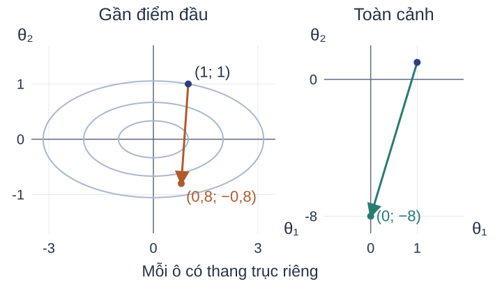
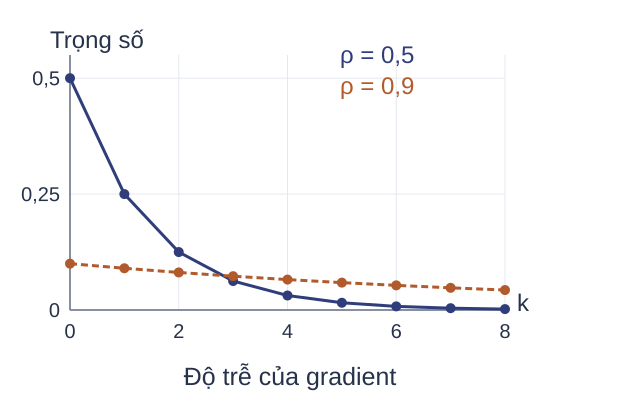
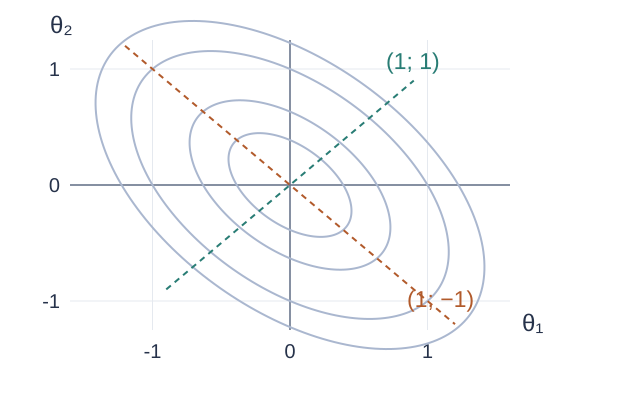
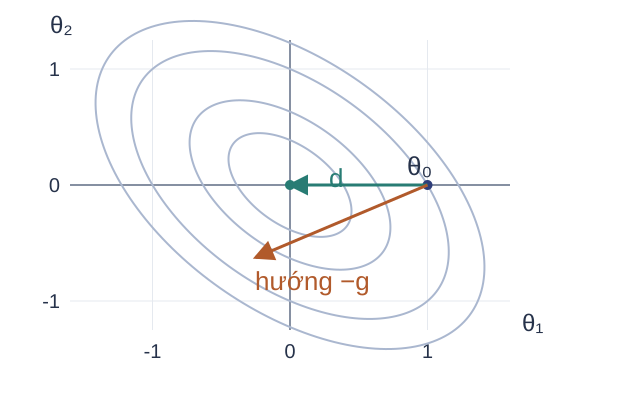
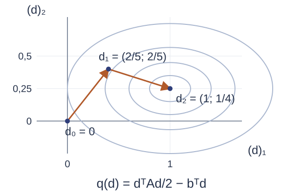
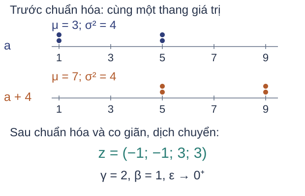
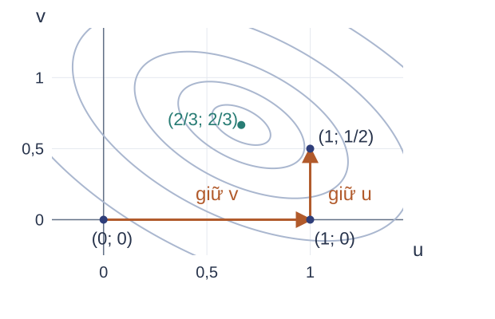
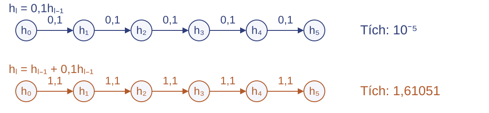
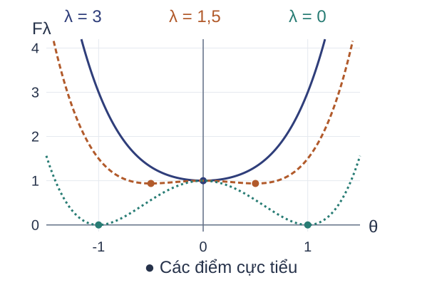

Các phương pháp tối ưu trong học sâu Cơ sở toán học cho AI · Bài 06
Thống kê gradient · Thông tin độ cong · Tổ chức huấn luyện
Viện Trí tuệ nhân tạo
Bài 06 giữ bài toán huấn luyện của Bài 05: cực tiểu hóa mất mát trung bình trên dữ liệu bằng một dãy bước lặp dùng gradient. Hạ gradient ngẫu nhiên (SGD), momentum và Nesterov ở Bài 05 nhân gradient hoặc vận tốc với một tốc độ học (learning rate), tức bước học của Bài 05, chung cho mọi tọa độ của tham số; các quy tắc khởi tạo của Bài 05 chọn thang trọng số ban đầu. Bài này xét những trường hợp một hệ số chung không đủ và xác định thành phần nào của quá trình huấn luyện cần thay.
Phạm vi gồm ba nhóm: điều chỉnh bước bằng thống kê gradient theo từng tọa độ, điều chỉnh bước bằng thông tin độ cong, và can thiệp vào phép tính mô hình, tập biến được cập nhật, đầu ra hoặc cách tổ chức huấn luyện theo giai đoạn. Mỗi phương pháp đi kèm dữ kiện nó cần, giả thiết, chi phí và phép kiểm trên mục tiêu đích; bài không xếp hạng phương pháp ngoài các điều kiện đó.
Kiến thức cần có: gradient, Hessian, dạng toàn phương và ma trận xác định dương; quy tắc dây chuyền; tìm bước (line search) quay lui Armijo và phương pháp Newton cho hàm lồi (Bài 04); SGD, momentum và khởi tạo (Bài 05).
Nguồn: Đề cương UET.AI2012, Buổi 6; Goodfellow, Bengio và Courville (2016), Deep Learning , §§8.5–8.7.
Nội dung và mục tiêu học tập Dữ liệu và mô hình (E)
→ Mục tiêu cùng điểm đầu (F)
→ Quy tắc cập nhật và quỹ đạo (B–D)
→ Quy tắc trả về và đầu ra (E)
Tính và phân biệt bước AdaGrad, RMSProp, Adam. Giải hoặc xấp xỉ hệ Newton; kiểm điều kiện của gradient liên hợp và BFGS. Vận dụng sáu chiến lược tổ chức huấn luyện; xác định thành phần bị thay và giới hạn. Vấn đề trung tâm. Một tốc độ học chung bị chặn bởi hướng cong nhất (Bài 05). Cần xác định thành phần phải điều chỉnh: thang của bước, độ cong, hay mô hình, đầu ra và cách tổ chức huấn luyện.
Sơ đồ bốn ô tách quá trình huấn luyện thành các thành phần có thể thay riêng. Dữ liệu và mô hình xác định mục tiêu $F$; điểm đầu là tham số ở vòng $0$. Quy tắc cập nhật, cùng lựa chọn khối biến được cập nhật, biến gradient thành bước và sinh quỹ đạo $\theta_0,\theta_1,\ldots$. Quy tắc trả về chọn tham số đầu ra từ quỹ đạo, chẳng hạn điểm cuối, điểm tốt nhất theo tập xác thực hoặc trung bình các điểm. Chữ trong ngoặc chỉ mạch nội dung xử lý thành phần đó: B dùng thống kê gradient, C và D dùng độ cong, E can thiệp vào phép tính mô hình, khối biến và đầu ra, F tổ chức huấn luyện theo giai đoạn.
Gradient liên hợp (conjugate gradient) và BFGS được phát triển trong bài. Sáu chiến lược của mục tiêu thứ ba là chuẩn hóa theo lô (batch normalization), hạ theo khối (block coordinate descent), trung bình Polyak (Polyak averaging), tiền huấn luyện (pretraining), tiếp diễn (continuation) và học theo chương trình (curriculum learning); thiết kế đường truyền gradient được xét thêm như một can thiệp vào kiến trúc.
Vấn đề trung tâm kế thừa một kết quả của Bài 05: trên hàm bậc hai có Hessian xác định dương, hạ gradient với tốc độ học $\eta$ ổn định khi $0\lt\eta\lt2/\lambda_{\max}$, với $\lambda_{\max}$ là trị riêng lớn nhất. Khi đó hướng có độ cong nhỏ nhất co theo hệ số $1-\eta\lambda_{\min}$, gần $1$ nếu $\lambda_{\min}$ nhỏ. Quy tắc cập nhật được viết thành một bài toán con có phạt; ví dụ hai độ cong $1$ và $9$ cho thấy hệ số chung không đủ.
Thang đo khác nhau giữa các tọa độ Ví dụ dẫn nhập. $F(\theta)=\frac12(\theta_1^2+9\theta_2^2)$, $\theta=(1,1)^\top$, $g=(1,9)^\top$.

$$\theta^+=\theta-\eta g$$
Tọa độ 2 chỉ co khi $\eta<2/9$; khi đó tọa độ 1 co chậm, hệ số $1-\eta>7/9$.
Ví dụ đo giới hạn $\eta\lt2/\lambda_{\max}$ của Bài 05 trên hàm có hai độ cong $1$ và $9$. Gradient là $\nabla F(\theta)=(\theta_1,9\theta_2)^\top$ và Hessian là $\operatorname{diag}(1,9)$. Tại $(1,1)$ có $g=(1,9)^\top$ và bước $\theta^+=\theta-\eta g$ cho $\theta^+=(1-\eta,\,1-9\eta)$.
Với $\eta=0{,}2$: $\theta^+=(0{,}8;\,-0{,}8)$ và $F=(0{,}64+9\cdot0{,}64)/2=3{,}2$. Tọa độ thứ hai đổi dấu vì hệ số $1-9\eta=-0{,}8$ âm, nhưng trị tuyệt đối vẫn giảm. Với $\eta=1$: tọa độ thứ nhất về đúng $0$, còn tọa độ thứ hai thành $-8$ và $F=9\cdot64/2=288$, lớn hơn giá trị ban đầu $5$. Ô trái của hình vẽ các elip đồng mức kéo dài theo trục $\theta_1$ quanh điểm đầu, cùng điểm $(0{,}8;-0{,}8)$; ô phải thu nhỏ để chứa điểm $(0;-8)$. Hai ô dùng thang trục khác nhau nên độ dài mũi tên chỉ so được trong cùng một ô.
Tọa độ thứ $j$ co khi $|1-\eta\lambda_j|\lt1$, tức $0\lt\eta\lt2/\lambda_j$. Với $\lambda_2=9$, điều kiện chung là $\eta\lt2/9$, cùng dạng $\eta\lt2/\lambda_{\max}$ của Bài 05 (ở đó $\lambda_{\max}=7$ và cận là $2/7$). Trong khoảng này hệ số của tọa độ thứ nhất là $1-\eta\gt7/9$, nên tọa độ ít cong co chậm. Các số trên thuộc hàm bậc hai xác định dương với gradient đầy đủ; chúng không mô tả sự giảm của gradient lô trên mạng không lồi.
Hai tọa độ cần hai độ dài bước khác nhau: $\eta_1=1$ và $\eta_2=1/9$ đưa cả hai về $0$ trong một bước, và một ma trận đặt ở vị trí của hệ số $\eta$ cho phép chọn như vậy.
Nguồn: Ví dụ và hình tự xây dựng; Goodfellow, Bengio và Courville (2016), Deep Learning , §8.2.1; Stanford CS231n (2017), Lecture 7, tr.15–17.
Bước cập nhật với ma trận phạt Trực quan. Bước $-\eta g$ cực tiểu $g^\top d+\|d\|^2/(2\eta)$, phạt mọi hướng như nhau. Thay $\|d\|^2$ bằng $d^\top Md$ để phạt mỗi hướng theo thang riêng.
$\mathcal D=\{(x_i,y_i)\}_{i=1}^n$, $\theta\in\mathbb R^p$, $F(\theta)=\frac1n\sum_i\ell(f_\theta(x_i),y_i)$.
Vòng $t\ge1$: tính gradient lô $g_t$ tại $\theta_{t-1}$. Với $M_t\succ0$, $\eta_t>0$:
$$\min_{d\in\mathbb R^p}\left\{g_t^\top d+\frac{1}{2\eta_t}d^\top M_td\right\}$$
$$d_t=-\eta_tM_t^{-1}g_t,\qquad\theta_t=\theta_{t-1}+d_t$$
Ví dụ trên hàm mở đầu: $M=\operatorname{diag}(1,9)$, $\eta=1$ cho $d=(-1,-1)^\top$, đưa $(1,1)$ về nghiệm $0$.
Mô hình bước có phạt viết bước hạ gradient thành nghiệm của một bài toán con. Với mục tiêu $g^\top d+\|d\|^2/(2\eta)$, đạo hàm theo $d$ là $g+d/\eta$, bằng $0$ tại $d=-\eta g$. Số hạng tuyến tính ước lượng thay đổi của mục tiêu; số hạng phạt ngăn bước đi xa vùng mà ước lượng tuyến tính còn đúng. Phạt $\|d\|^2$ như nhau theo mọi hướng, nên mọi tọa độ chịu cùng một hệ số.
Trong khung chung, $F$ là trung bình mất mát $\ell$ trên $n$ mẫu của $\mathcal D$. Ở vòng $t\ge1$, gradient lô $g_t$ là gradient của mất mát trung bình trên một lô mẫu (Bài 05 gọi là gradient nhóm), tính tại $\theta_{t-1}$. Ma trận đối xứng xác định dương (symmetric positive definite, SPD) thỏa $M=M^\top$ và $z^\top Mz\gt0$ với mọi $z\ne0$. Đạo hàm của mục tiêu bài toán con là $g_t+M_td/\eta_t$; Hessian $M_t/\eta_t\succ0$ nên mục tiêu lồi chặt (còn gọi là lồi nghiêm ngặt) và điểm dừng $d_t=-\eta_tM_t^{-1}g_t$ là cực tiểu duy nhất. Trong ví dụ, $M=\operatorname{diag}(1,9)$ trùng Hessian của $F$; tổng quát, $M_t$ chỉ là ma trận phạt, chưa nhất thiết là Hessian.
Khi $g_t=\nabla F(\theta_{t-1})\ne0$, có $g_t^\top d_t=-\eta_tg_t^\top M_t^{-1}g_t\lt0$ vì $M_t^{-1}\succ0$. Đạo hàm theo hướng âm nên bước đủ ngắn làm $F$ giảm; một bước hữu hạn vẫn cần kiểm độ dài. Với gradient lô, kết luận về dấu chỉ áp dụng cho mất mát của lô đó.
Các phương pháp thích ứng dựng $M_t$ đường chéo từ lịch sử gradient, phương pháp Newton dùng $M_t$ là Hessian; cả hai đều cần $M_t\succ0$ để công thức $d_t=-\eta_tM_t^{-1}g_t$ cho một cực tiểu.
Nguồn: Tự suy ra; Boyd và Vandenberghe (2004), §9.4.1, tr.476–477; Goodfellow, Bengio và Courville (2016), Deep Learning , §8.5.
Ma trận phạt và tính xác định dương Câu hỏi: Cho $g=(2,8)^\top$, $\eta=1/2$, xét
$$\min_{d\in\mathbb R^2}\left\{g^\top d+\frac{1}{2\eta}d^\top Md\right\}.$$
Giải thích kết luận cuối bằng dạng toàn phương.
Ba ma trận phạt dùng chung $g=(2,8)^\top$ và $\eta=1/2$, nên hệ số $1/(2\eta)$ bằng $1$ và mục tiêu là $g^\top d+d^\top Md$. Khi $M\succ0$, điều kiện đạo hàm $g+2Md=0$ cho $d=-\tfrac12M^{-1}g$.
Với $M=I$: $d=-g/2=(-1,-4)^\top$; bước theo tọa độ thứ hai dài gấp bốn vì gradient lớn gấp bốn. Với $M=\operatorname{diag}(1,4)$: $M^{-1}g=(2,2)^\top$ nên $d=(-1,-1)^\top$; phạt mạnh gấp bốn ở tọa độ thứ hai cân bằng hai thành phần, như $\operatorname{diag}(1,9)$ trong ví dụ mở đầu. Với $M=\operatorname{diag}(1,-4)$: dạng toàn phương $d^\top Md=d_1^2-4d_2^2$ nhận cả giá trị dương lẫn âm, tức $M$ bất định. Chọn $d=(0,t)^\top$ thì mục tiêu bằng $8t-4t^2\to-\infty$ khi $|t|\to\infty$, nên bài toán không có cực tiểu.
Trường hợp cuối dễ giải sai: $M$ khả nghịch nên phương trình dừng vẫn có nghiệm $d=-\tfrac12M^{-1}g=(-1,1)^\top$, với giá trị mục tiêu $6-3=3$. Điểm này là điểm yên ngựa (saddle point) của mục tiêu bài toán con, vì mục tiêu lồi theo $d_1$ và lõm theo $d_2$. Giải phương trình dừng không thay được việc kiểm $M\succ0$.
Ma trận $\operatorname{diag}(1,4)$ cho bước cân bằng vì thang được cho sẵn; khi huấn luyện, thang chưa biết và phải ước lượng từ các gradient đã tính, với $p$ số cho $p$ tọa độ.
Nguồn: Bài tập tự xây dựng từ mô hình bước có phạt.
Thống kê gradient theo tọa độ Ma trận phạt đường chéo cần một thang cho mỗi tọa độ. Trên hàm mở đầu $g=(\theta_1,9\theta_2)$: khi hai tọa độ lệch khỏi nghiệm cùng cỡ, tọa độ cong hơn có gradient lớn hơn.
Tọa độ 1: xuất hiện cả hai vòng; thống kê tăng từ $4$ lên $8$.
Tọa độ 2: chỉ xuất hiện ở vòng đầu; thống kê giữ giá trị $1$.
Bình phương giữ độ lớn đóng góp khi gradient đổi dấu.
Trên hàm mở đầu, thành phần gradient là $(\nabla F)_j=\lambda_j\theta_j$ với $\lambda_1=1$, $\lambda_2=9$; khi $|\theta_1|=|\theta_2|$, tỷ số $|(\nabla F)_2|/|(\nabla F)_1|$ bằng đúng tỷ số độ cong $9$. Độ lớn gradient vì vậy mang một phần thông tin về thang của từng tọa độ, và ghi nó chỉ cần $p$ số, trong khi Hessian có $p^2$ phần tử. Thông tin này không thuần túy: $|(\nabla F)_j|$ còn phụ thuộc khoảng cách $|\theta_j|$ tới nghiệm.
Bảng dùng một dãy gradient minh họa $g_1=(2,1)^\top$, $g_2=(2,0)^\top$; dãy này không lấy từ một quỹ đạo cụ thể trên hàm mở đầu. Dấu $\odot$ là tích theo từng tọa độ (tích Hadamard), nên $g_t\odot g_t$ là vectơ bình phương các thành phần. Cột cuối cộng dồn các vectơ đó: tọa độ thứ nhất nhận $4$ ở cả hai vòng nên tổng là $8$; tọa độ thứ hai chỉ có gradient khác $0$ ở vòng đầu nên tổng dừng ở $1$.
Bình phương được dùng vì hai gradient trái dấu có thể triệt tiêu khi cộng trực tiếp: dãy $2,-2$ có tổng $0$ nhưng tổng bình phương $8$. Tổng bình phương phụ thuộc các điểm và các lô đã đi qua. Nó là thống kê gradient, không phải Hessian, và chỉ phản ánh độ cong gián tiếp qua độ lớn gradient.
Căn bậc hai của tổng này, đặt trên đường chéo của $M_t$, cho mỗi tọa độ một thang riêng; đó là ma trận phạt của AdaGrad.
Nguồn: Goodfellow, Bengio và Courville (2016), Deep Learning , §8.5.1; Duchi, Hazan và Singer (2011), §3, Hình 1; Stanford CS231n (2017), tr.30–34.
Ví dụ cập nhật AdaGrad AdaGrad chọn $M_t=\operatorname{diag}(\sqrt{v_t}+\varepsilon)$, $v_t$ là tổng bình phương gradient.
$$v_t=v_{t-1}+g_t\odot g_t,\qquad d_t=-\frac{g_t}{\sqrt{v_t}}$$
Với $\eta$ cố định, tốc độ học hiệu dụng $\eta/\sqrt{v_{t,j}}$ không tăng. Ví dụ bỏ $\varepsilon$ vì các mẫu số đều dương.
Ví dụ chạy hai vòng AdaGrad trên đúng dãy gradient của bảng thống kê, với $\eta=1$. Tên AdaGrad viết tắt từ gradient thích ứng (adaptive gradient). Theo Goodfellow, Bengio và Courville (2016), AdaGrad điều chỉnh riêng tốc độ học của từng tham số, tỷ lệ nghịch với căn bậc hai của tổng bình phương mọi giá trị gradient trong lịch sử của tham số đó.
Thay $M_t=\operatorname{diag}(\sqrt{v_t}+\varepsilon)$ vào $d_t=-\eta M_t^{-1}g_t$ được phép chia theo tọa độ $d_{t,j}=-\eta g_{t,j}/(\sqrt{v_{t,j}}+\varepsilon)$; ví dụ bỏ $\varepsilon$ vì mọi $v_{t,j}$ dương. Vòng 1: $v_1=(4,1)$, $d_1=(-2/2,\,-1/1)=(-1,-1)$. Vòng 2: $v_2=(8,1)$, $d_2=(-2/\sqrt8,\,0)=(-1/\sqrt2,\,0)\approx(-0{,}7071;\,0)$. Thống kê được cập nhật trước phép chia; nếu chia cho $v_{t-1}$ thì ở vòng 1 mẫu số là $\sqrt{v_0}=0$.
Tốc độ học hiệu dụng (effective learning rate) của tọa độ $j$ là $\eta/\sqrt{v_{t,j}}$: tọa độ thứ nhất giảm từ $1/2$ xuống $1/(2\sqrt2)\approx0{,}354$, tọa độ thứ hai giữ $1$. Đại lượng này không tăng vì $v_{t,j}$ không giảm. Độ dài bước còn phụ thuộc tử số $g_{t,j}$: tọa độ thứ hai có tốc độ hiệu dụng lớn nhất nhưng bước bằng $0$ ở vòng 2 vì gradient hiện tại bằng $0$.
Tốc độ hiệu dụng không tăng và bước bằng $0$ khi gradient bằng $0$ là hai tính chất được giữ cho mọi dãy lô.
Nguồn: Ví dụ tự xây dựng; Goodfellow, Bengio và Courville (2016), Deep Learning , §8.5.1, thuật toán 8.4.
Thuật toán AdaGrad Đầu vào: $\theta_0$, $\eta,\varepsilon>0$, các lô $\mathcal B_t$, ngân sách $T$; đặt $v_0=0$.
Tính $g_t$ tại $\theta_{t-1}$ trên lô $\mathcal B_t$. Cập nhật $v_t=v_{t-1}+g_t\odot g_t$. Cập nhật $\displaystyle\theta_t=\theta_{t-1}-\eta\frac{g_t}{\sqrt{v_t}+\varepsilon}$. $$M_t=\operatorname{diag}(\sqrt{v_t}+\varepsilon)\succ0$$
Sau hai vòng ví dụ: tốc độ hiệu dụng là $\eta/(\sqrt8+\varepsilon)$ và $\eta/(1+\varepsilon)$.
Thuật toán giữ phép chia theo tọa độ của ví dụ hai vòng và thêm hai thành phần ví dụ đã bỏ qua: hằng số $\varepsilon\gt0$ và quy tắc dừng. Ngoài phép tính gradient, mỗi vòng tốn $O(p)$ phép toán và giữ một vectơ trạng thái $v_t\in\mathbb R^p$. Thuật toán dừng khi hết $T$ vòng hoặc theo tiêu chí xác thực ấn định trước; đầu ra là $\theta_T$ hoặc điểm được chọn theo tiêu chí đó.
Mọi phần tử đường chéo $\sqrt{v_{t,j}}+\varepsilon$ không nhỏ hơn $\varepsilon\gt0$, nên $M_t\succ0$ và bước AdaGrad là cực tiểu duy nhất của bài toán con có phạt. Ứng dụng điển hình là đặc trưng thưa (sparse feature), chỉ khác $0$ ở ít mẫu: gradient theo tham số của nó thường bằng $0$, tổng bình phương tăng chậm và tốc độ hiệu dụng giữ lớn. Trong ví dụ, tọa độ chỉ hoạt động một lần có tốc độ hiệu dụng gấp khoảng $\sqrt8\approx2{,}83$ lần khi $\varepsilon$ nhỏ.
Theo Goodfellow và cộng sự (2016), với mạng sâu, tích lũy từ đầu có thể làm tốc độ hiệu dụng giảm sớm và quá mức; AdaGrad hoạt động tốt với một số mô hình, không với mọi mô hình. Bảo đảm của Duchi, Hazan và Singer (2011) thuộc tối ưu lồi trực tuyến và không tự áp dụng cho mạng sâu không lồi.
Vì $v_t$ chỉ tăng, tốc độ hiệu dụng giảm đơn điệu; thay tổng bằng một trung bình có trọng số giảm theo độ trễ cho phép thống kê giảm khi gradient nhỏ đi.
Nguồn: Goodfellow, Bengio và Courville (2016), Deep Learning , §8.5.1, thuật toán 8.4; Duchi, Hazan và Singer (2011), §3 tr.2130, §5 tr.2136.
Ví dụ cập nhật RMSProp AdaGrad cộng mọi bình phương nên $v_t$ không giảm và tốc độ học hiệu dụng $\eta/\sqrt{v_{t,j}}$ không tăng. RMSProp thay tổng bằng trung bình mũ, quên dần gradient xa với hệ số nhớ $\rho$.
$$v_t=\rho v_{t-1}+(1-\rho)g_t\odot g_t$$
Ở vòng hai: $v_2=\frac14g_1\odot g_1+\frac12g_2\odot g_2$.
Hai gradient $(2,1)^\top$ và $(2,0)^\top$ giữ nguyên; chỉ cách lập thống kê thay đổi, với hệ số nhớ $\rho=1/2$. Tên RMSProp lấy từ căn trung bình bình phương (root mean square) của gradient. Theo Goodfellow và cộng sự (2016), RMSProp sửa AdaGrad bằng cách đổi tổng tích lũy thành trung bình trượt có trọng số mũ (exponentially weighted moving average), gọi ngắn là trung bình mũ.
Vòng 1: $v_1=\tfrac12(4,1)=(2,1/2)$, bước $d_1=(-2/\sqrt2,\,-1/\sqrt{1/2})=(-\sqrt2,-\sqrt2)$. Vòng 2: $v_2=\tfrac12(2,1/2)+\tfrac12(4,0)=(1,1/4)+(2,0)=(3,1/4)$, bước $d_2=(-2/\sqrt3,\,0)\approx(-1{,}1547;\,0)$. Khai triển $v_2$ cho trọng số $\rho(1-\rho)=1/4$ của gradient cũ và $1-\rho=1/2$ của gradient mới; AdaGrad gán trọng số $1$ cho cả hai. Ở tọa độ thứ hai, thống kê giảm từ $1/2$ xuống $1/4$, trong khi AdaGrad giữ $1$.
Bước vòng 1 dài hơn bước AdaGrad ($\sqrt2$ so với $1$) vì $v_1=(1-\rho)\,g_1\odot g_1$ nhỏ hơn $g_1\odot g_1$: sau một vòng, tổng trọng số chỉ là $1-\rho$. Hiện tượng này đến từ khởi tạo $v_0=0$, không phản ánh ưu thế của phương pháp. So sánh độ dài bước của hai phương pháp có thang thống kê khác nhau không đủ để xếp hạng chúng. Phép tính tay bỏ $\varepsilon$ vì mẫu số dương; triển khai giữ $\varepsilon\gt0$.
Trọng số $\tfrac14$ và $\tfrac12$ là trường hợp $t=2$ của quy tắc tổng quát: gradient cách $k$ vòng nhận trọng số $(1-\rho)\rho^k$.
Nguồn: Ví dụ tự xây dựng; Goodfellow, Bengio và Courville (2016), Deep Learning , §8.5.2; Hinton, Srivastava và Swersky (2012), Lecture 6, tr.29.
Thuật toán RMSProp $v_0=0$, $0\lt \rho\lt 1$, $\eta,\varepsilon>0$; lấy $g_t$ tại $\theta_{t-1}$.

$$v_t=\rho v_{t-1}+(1-\rho)g_t\odot g_t$$
$$\theta_t=\theta_{t-1}-\eta\frac{g_t}{\sqrt{v_t}+\varepsilon}$$
Tọa độ có gradient $0$ trong $k$ vòng: thống kê cũ được nhân với $\rho^k$.
Dừng theo ngân sách hoặc xác thực; lưu một vectơ trạng thái.
Thuật toán áp cập nhật trung bình mũ của ví dụ cho mọi vòng và giữ phép chia theo tọa độ của AdaGrad. Khai triển truy hồi từ $v_0=0$ cho $v_t=(1-\rho)\sum_{i=1}^t\rho^{t-i}\,g_i\odot g_i$. Hình vẽ trọng số $(1-\rho)\rho^k$ theo độ trễ $k=t-i$ từ $0$ đến $8$. Đường $\rho=0{,}5$ bắt đầu ở $0{,}5$ và giảm một nửa sau mỗi vòng; đường $\rho=0{,}9$ bắt đầu ở $0{,}1$ và giảm chậm, nên gradient cách nhiều vòng vẫn còn ảnh hưởng. Khi $t$ lớn, độ trễ trung bình theo các trọng số này là $\rho/(1-\rho)$: bằng $1$ khi $\rho=0{,}5$ và bằng $9$ khi $\rho=0{,}9$.
Nếu tọa độ $j$ có gradient bằng $0$ trong $k$ vòng liên tiếp, mỗi vòng chỉ nhân thống kê với $\rho$, nên sau $k$ vòng thống kê còn $\rho^k$ lần giá trị cũ; với $\rho=0{,}9$ và $k=10$, hệ số là $0{,}9^{10}\approx0{,}35$. Tốc độ hiệu dụng của tọa độ đó tăng trở lại, điều AdaGrad không cho phép. Thuật toán dừng theo ngân sách hoặc tiêu chí xác thực như AdaGrad; trạng thái là một vectơ, chi phí ngoài gradient là $O(p)$.
Tổng trọng số sau $t$ vòng bằng $(1-\rho)\sum_{k=0}^{t-1}\rho^k=1-\rho^t\lt1$: RMSProp ở dạng này không hiệu chỉnh ảnh hưởng của khởi tạo bằng $0$. Bài đặt $\varepsilon$ ngoài căn; thuật toán 8.5 của giáo trình đặt hằng số bên trong căn, và hai cách đặt cho giá trị khác nhau nên không đồng nhất được.
Hai điều RMSProp chưa có, hiệu chỉnh tổng trọng số $1-\rho^t$ và một bộ nhớ về hướng của gradient, là hai thành phần Adam bổ sung.
Nguồn: Goodfellow, Bengio và Courville (2016), Deep Learning , §8.5.2, thuật toán 8.5; Hinton, Srivastava và Swersky (2012), Lecture 6, tr.29; hình tự vẽ.
Ví dụ hiệu chỉnh moment trong Adam Adam dùng mẫu số kiểu RMSProp (sau hiệu chỉnh) và thay tử $g_t$ bằng trung bình mũ $m_t$ của gradient, như momentum (Bài 05). Hai trung bình bắt đầu từ $0$ nên cần hiệu chỉnh.
$$d_1=-\frac{\widehat m_1}{\sqrt{\widehat v_1}}=(-1,-1)^\top$$
Ví dụ dùng $\eta=1$ và bỏ $\varepsilon$ vì mẫu dương.
Dữ kiện chỉ cần một gradient $g_1=(2,1)^\top$. Tên Adam lấy từ ước lượng moment thích ứng (adaptive moment estimation). Goodfellow và cộng sự (2016) mô tả Adam như một biến thể của tổ hợp RMSProp với momentum, có thêm hiệu chỉnh độ chệch (bias correction) cho cả hai moment.
Moment bậc nhất $m_t$ là trung bình mũ của gradient với hệ số $\beta_1$; nó tích lũy hướng như vận tốc momentum của Bài 05 nhưng có thêm thừa số chuẩn hóa $1-\beta_1$. Moment bậc hai thô $v_t$ là thống kê của RMSProp với hệ số $\beta_2$. Vòng 1: $m_1=\tfrac12(2,1)=(1,1/2)$ và $v_1=\tfrac14(4,1)=(1,1/4)$. Tổng trọng số sau một vòng là $1-\beta_1=1/2$ và $1-\beta_2=1/4$; chia cho chúng được $\widehat m_1=(2,1)=g_1$ và $\widehat v_1=(4,1)=g_1\odot g_1$, rồi $d_1=-(2/2,\,1/1)=(-1,-1)$.
Ở vòng đầu luôn có $\widehat m_1=g_1$ và $\widehat v_1=g_1\odot g_1$, nên khi bỏ $\varepsilon$, mỗi tọa độ khác $0$ của $d_1$ có độ lớn đúng bằng $\eta$, bất kể độ lớn gradient. Ở vòng $t$, tổng trọng số là $1-\beta^t$; gọi kết quả chia là ước lượng không chệch còn cần giả thiết moment không đổi theo thời gian. Các hệ số $1/2$ và $3/4$ chọn để tính tay; Kingma và Ba đề xuất mặc định $\beta_1=0{,}9$, $\beta_2=0{,}999$. Bước đầu trùng bước AdaGrad trong ví dụ không làm hai thuật toán trùng nhau ở các vòng sau.
Đẳng thức $\widehat m_1=g_1$ chỉ đúng ở vòng đầu; từ vòng hai, $\widehat m_t$ trộn nhiều gradient, nên dấu của nó có thể ngược dấu $g_t$.
Nguồn: Kingma và Ba (2015), thuật toán 1 và §3; Goodfellow, Bengio và Courville (2016), Deep Learning , §8.5.3; ví dụ tự xây dựng.
Thuật toán Adam $m_0=v_0=0$, $0\lt \beta_1,\beta_2\lt 1$, $\eta_t,\varepsilon>0$; $g_t$ tại $\theta_{t-1}$.
$$m_t=\beta_1m_{t-1}+(1-\beta_1)g_t$$
$$\widehat m_t=\frac{m_t}{1-\beta_1^t}$$
$$v_t=\beta_2v_{t-1}+(1-\beta_2)g_t\odot g_t$$
$$\widehat v_t=\frac{v_t}{1-\beta_2^t}$$
$$\theta_t=\theta_{t-1}-\eta_t\frac{\widehat m_t}{\sqrt{\widehat v_t}+\varepsilon}$$
$v_t$ ước lượng moment bậc hai thô, không phải phương sai. Moment bậc nhất có thể khác hướng gradient hiện tại.
Thuật toán ghép hai trung bình mũ và hai hệ số hiệu chỉnh của ví dụ vòng đầu thành quy tắc cho mọi $t\ge1$. Đầu vào gồm $\theta_0$, các lô $\mathcal B_t$, lịch tốc độ học $\eta_t$, hai hệ số nhớ, $\varepsilon$ và ngân sách $T$. Hiệu chỉnh dùng lũy thừa $\beta^t$ của chỉ số vòng, nên $t$ phải bắt đầu từ $1$. Trạng thái gồm hai vectơ $m_t,v_t$; chi phí ngoài gradient là $O(p)$.
Tính chất kỳ vọng: nếu $\mathbb E[g_i]=\mu$ và $\mathbb E[g_i\odot g_i]=\nu$ với mọi $i$, thì $\mathbb E[m_t]=(1-\beta_1)\sum_{i=1}^t\beta_1^{t-i}\mu=(1-\beta_1^t)\mu$, do đó $\mathbb E[\widehat m_t]=\mu$; tương tự $\mathbb E[\widehat v_t]=\nu$. Phép tính chỉ dùng tính tuyến tính của kỳ vọng. Khi moment đổi theo thời gian, tính không chệch không còn được bảo đảm. Phương sai từng tọa độ là $\mathbb E[g^2]-(\mathbb E[g])^2$, khác moment thô $\mathbb E[g^2]$ mà $v_t$ ước lượng.
Bước Adam có dạng $-\eta_tM_t^{-1}\widehat m_t$ với $M_t$ đường chéo dương. Kết luận hướng giảm của mô hình bước có phạt cần tử số là gradient hiện tại, nên không áp dụng ở đây. Phản ví dụ một chiều: giả sử các gradient trước dương và đủ lớn để $\widehat m_t=1$, trong khi $g_t=-1$; chẳng hạn $\beta_1=1/2$, $g_1=5$, $g_2=-1$ cho $m_2=3/4$ và $\widehat m_2=1$. Khi đó $d_t=-\eta_t\widehat m_t/(\sqrt{\widehat v_t}+\varepsilon)\lt0$ và $g_td_t\gt0$: bước đi theo hướng làm tăng xấp xỉ tuyến tính của mất mát tại điểm hiện tại.
Giới hạn này thuộc tử số. Giới hạn còn lại thuộc mẫu số: mọi $M_t$ của AdaGrad, RMSProp và Adam đều đường chéo nên không chứa tương tác giữa hai tọa độ.
Nguồn: Kingma và Ba (2015), thuật toán 1, §3; Goodfellow, Bengio và Courville (2016), Deep Learning , §8.5.3, thuật toán 8.7.
Giới hạn của ma trận phạt đường chéo 
$$Q=\begin{pmatrix}2&1\\1&2\end{pmatrix}$$
$$z^\top Qz=2z_1^2+2z_1z_2+2z_2^2$$
Hạng tương tác ghép hai tọa độ làm trục chính của elip nghiêng.
Ma trận đường chéo chỉ tạo các hạng bình phương riêng; thống kê đường chéo không tái tạo phần tử ngoài đường chéo của $Q$.
Ma trận $Q$ có phần tử ngoài đường chéo $Q_{12}=Q_{21}=1$, nên khai triển dạng toàn phương sinh hạng chéo $2z_1z_2$. Hình vẽ các đường đồng mức $z^\top Qz=c$; trục $\theta_1,\theta_2$ của hình ứng với $z_1,z_2$, và hình có hai trục riêng ghi nhãn $(1;1)$ và $(1;-1)$. Vì $Q(1,1)^\top=3(1,1)^\top$ và $Q(1,-1)^\top=(1,-1)^\top$, hai trị riêng là $3$ và $1$; elip hẹp theo hướng $(1,1)$ (bán trục $\sqrt{c/3}$), rộng theo hướng $(1,-1)$ (bán trục $\sqrt c$), nên trục chính nghiêng $45^\circ$ so với trục tọa độ.
Với $D=\operatorname{diag}(a,b)$, dạng $z^\top Dz=az_1^2+bz_2^2$ không có hạng $z_1z_2$ và các elip của nó luôn có trục song song trục tọa độ. Đổi thang từng tọa độ cũng không bù được: đổi biến $\theta=D^{-1/2}\varphi$ biến Hessian thành $D^{-1/2}QD^{-1/2}$, và số điều kiện (condition number), tức tỷ số trị riêng lớn nhất trên nhỏ nhất, của ma trận này không nhỏ hơn $3$ với mọi $a,b\gt0$, và bằng $3$ khi $a=b$. Trong ví dụ này, không thang đường chéo nào làm bài toán cân hơn chính $Q$.
Thống kê đường chéo đổi được tỷ lệ hai tọa độ nhưng không biểu diễn được hướng nghiêng của dạng toàn phương. Kết luận hình học của một ví dụ hai chiều chưa đủ để so sánh hiệu suất huấn luyện; so sánh thực nghiệm phải giữ cùng dữ liệu, ngân sách và cách chọn siêu tham số.
Ba thuật toán đường chéo vẫn khác nhau ở cách giữ trạng thái, và khác biệt đó lộ rõ nhất khi gradient hiện tại bằng $0$.
Nguồn: Goodfellow, Bengio và Courville (2016), Deep Learning , §§8.5.4–8.6.1; Stanford CS231n (2017), tr.45–49; hình tự vẽ.
So sánh AdaGrad, RMSProp và Adam Câu hỏi: Cho $g_1=2$, $g_2=0$, mọi trạng thái ban đầu bằng $0$; $\eta=1$. Bỏ $\varepsilon$ vì mẫu dương.
Giải thích vì sao Adam còn dịch chuyển khi gradient hiện tại bằng $0$.
Câu hỏi dùng một tọa độ với $g_1=2$, $g_2=0$. Gradient hiện tại bằng $0$ nên ba thuật toán chỉ khác nhau ở trạng thái mang từ vòng 1 sang.
AdaGrad: $v_1=4$, $v_2=4+0=4$, $d_2=-0/\sqrt4=0$. RMSProp với $\rho=1/2$: $v_1=2$, $v_2=\tfrac12\cdot2+0=1$, $d_2=0$. Adam: $m_1=\tfrac12\cdot2=1$, $v_1=\tfrac14\cdot4=1$; $m_2=\tfrac12\cdot1+0=\tfrac12$, $v_2=\tfrac34\cdot1+0=\tfrac34$. Hệ số hiệu chỉnh ở vòng 2 là $1-\beta_1^2=3/4$ và $1-\beta_2^2=7/16$, nên $\widehat m_2=(1/2)/(3/4)=2/3$ và $\widehat v_2=(3/4)/(7/16)=12/7$. Bước $d_2=-(2/3)/\sqrt{12/7}=-\sqrt{21}/9\approx-0{,}5092$.
AdaGrad và RMSProp có tử số là gradient hiện tại nên bước bằng $0$, dù thống kê ở mẫu số còn dương. Tử số của Adam là $\widehat m_2$, giữ gradient vòng 1 với trọng số $\beta_1(1-\beta_1)=1/4$ trước hiệu chỉnh, nên tham số còn dịch chuyển theo hướng giảm của gradient cũ. Hai lỗi thường gặp, quên hiệu chỉnh và dùng hệ số hiệu chỉnh của vòng 1 ($1/2$ và $1/4$) cho vòng 2, đều cho cùng giá trị sai $-(1/2)/\sqrt{3/4}=-1/\sqrt3\approx-0{,}5774$.
Cả ba thuật toán xử lý từng tọa độ riêng; thông tin chúng không dùng là tương tác giữa các tọa độ, tức phần tử ngoài đường chéo của Hessian.
Nguồn: Bài tập tự xây dựng theo AdaGrad, RMSProp và Adam.
Tương tác độ cong giữa các tọa độ $F(\theta)=\frac12\theta^\top Q\theta$, $Q=\begin{pmatrix}2&1\\1&2\end{pmatrix}$, $\theta_0=(1,0)^\top$.

$$\nabla F(\theta)=Q\theta,\qquad H=Q\succ0$$
$$g=(2,1)^\top$$
Gradient âm không cùng phương với đoạn nối điểm đầu tới nghiệm.
$g_2=\theta_1+2\theta_2=1$ sinh ra từ phần tử ngoài đường chéo $Q_{12}=1$; Hessian chứa tương tác này.
Ma trận nghiêng $Q$ nay đóng vai Hessian của mục tiêu $F(\theta)=\tfrac12\theta^\top Q\theta$. Hai trị riêng $1$ và $3$ dương nên $Q\succ0$, $F$ lồi chặt và nghiệm duy nhất là $\theta^*=0$.
Đạo hàm riêng là $\partial_1F=2\theta_1+\theta_2$ và $\partial_2F=\theta_1+2\theta_2$. Tại $\theta_0=(1,0)^\top$ được $g=(2,1)^\top$. Thành phần $g_2=1$ xuất hiện dù $\theta_2=0$, vì $\theta_1$ đi vào $\partial_2F$ qua $Q_{21}=1$. Hình vẽ elip nghiêng trên hai trục $\theta_1,\theta_2$ từ $-1$ đến $1$, điểm $\theta_0$ trên trục hoành, mũi tên ghi «hướng $-g$» và mũi tên $d$ từ $\theta_0$ về gốc. Mũi tên $-g$ được nhân $5/8$ để vừa khung, tỷ lệ hai thành phần vẫn là $2:1$; nó lệch khỏi $d=(-1,0)^\top$ một góc có cosin $2/\sqrt5$, khoảng $26{,}6^\circ$.
Mọi ma trận phạt đường chéo $D=\operatorname{diag}(a,b)\succ0$ cho hướng $-D^{-1}g=(-2/a,\,-1/b)^\top$, có thành phần thứ hai khác $0$, nên không thể cùng phương với $(-1,0)^\top$. Muốn hướng chỉ thẳng tới nghiệm phải dùng cả phần tử ngoài đường chéo. Hessian ở đây là hằng; với mạng sâu, Hessian đổi theo tham số và chỉ mô tả độ cong cục bộ quanh điểm hiện tại.
Hệ tuyến tính $Qd=-g$ dùng toàn bộ $Q$, kể cả $Q_{12}$, và cho đúng hướng $(-1,0)^\top$.
Nguồn: Goodfellow, Bengio và Courville (2016), Deep Learning , §8.6.1; Stanford CS231n (2017), tr.45–48; ví dụ và hình tự xây dựng.
Ví dụ bước Newton Giữ $Q=\begin{pmatrix}2&1\\1&2\end{pmatrix}$, $\theta_0=(1,0)^\top$, $g=(2,1)^\top$.
Ma trận phạt bằng Hessian, $M=Q$, $\eta=1$:
$$Qd=-g$$
$$\begin{cases}2d_1+d_2=-2\\d_1+2d_2=-1\end{cases}$$
Lấy phương trình đầu trừ hai lần phương trình sau:
$$-3d_2=0\ \Rightarrow\ d=(-1,0)^\top$$
$$\theta_1=\theta_0+d=(0,0)^\top$$
$F(\theta_1)=0$, nên một bước đạt nghiệm của hàm bậc hai này.
Ví dụ chọn ma trận phạt bằng Hessian, $M=Q$, và $\eta=1$ trong mô hình bước có phạt. Bài toán con trở thành $\min_d\{g^\top d+\tfrac12d^\top Qd\}$; điều kiện đạo hàm bằng $0$ cho $Qd=-g$. Ký hiệu $d_1,d_2$ ở đây là hai tọa độ của vectơ bước $d$, không phải chỉ số vòng, còn $\theta_1$ trên mặt trang là điểm sau một bước.
Phép khử: lấy phương trình đầu trừ hai lần phương trình sau, vế trái là $(2d_1+d_2)-2(d_1+2d_2)=-3d_2$, vế phải là $-2-2\cdot(-1)=0$, nên $d_2=0$; thay vào phương trình sau được $d_1=-1$. Kiểm lại: $Q(-1,0)^\top=(-2,-1)^\top=-g$. Lời giải là giải hệ, không lập ma trận nghịch đảo $Q^{-1}$; với hệ lớn, giải hệ rẻ hơn và ổn định số hơn lập nghịch đảo.
Trên hàm bậc hai, khai triển Taylor bậc hai là chính xác: $F(\theta_0+d)=F(\theta_0)+g^\top d+\tfrac12d^\top Qd$, nên cực tiểu của bài toán con cũng là cực tiểu của $F$. Một bước đạt nghiệm nhờ ba điều kiện cùng lúc: mục tiêu bậc hai xác định dương, hệ được giải chính xác, và độ dài bước bằng $1$. Khi mục tiêu không bậc hai, bước Newton chỉ cực tiểu hóa mô hình cục bộ.
Ngoài hàm bậc hai, Hessian $H(\theta)$ đổi theo $\theta$, nên hệ cùng dạng phải được lập lại tại mỗi điểm với mô hình Taylor của điểm đó.
Nguồn: Ví dụ tự xây dựng; Goodfellow, Bengio và Courville (2016), Deep Learning , §8.6.1.
Phương pháp Newton Khi $F$ không bậc hai, Hessian đổi theo $\theta$; tại mỗi điểm, dùng $M=H(\theta)$ cho mô hình Taylor bậc hai, với giả thiết dưới đây.
$$q(d)=F(\theta)+g^\top d+\tfrac12d^\top Hd$$
$$Hd=-g,\qquad\theta^+=\theta+\alpha d$$
Mệnh đề. Nếu $g\ne0$ thì $g^\top d=-g^\top H^{-1}g\lt 0$; chọn $\alpha>0$ bằng tìm bước.
Định lý (hội tụ cục bộ). Nếu $\nabla F(\theta^*)=0$, $\nabla^2F(\theta^*)\succ0$, Hessian Lipschitz gần $\theta^*$, điểm đầu đủ gần và dùng bước đầy đủ, thì $\|\theta_{t+1}-\theta^*\|\le C\|\theta_t-\theta^*\|^2$.
Giả thiết tại điểm hiện tại: $F$ khả vi hai lần và $H=\nabla^2F(\theta)\succ0$. Mô hình $q(d)$ là khai triển Taylor bậc hai; bỏ hằng $F(\theta)$, nó là trường hợp $M=H$, $\eta=1$ của mô hình bước có phạt. Cực tiểu của $q$ thỏa hệ Newton $Hd=-g$, cùng hệ mà phương pháp Newton cho hàm lồi ở Bài 04 sử dụng.
Chứng minh mệnh đề: $H\succ0$ kéo theo $H^{-1}\succ0$, nên $g^\top d=-g^\top H^{-1}g\lt0$ khi $g\ne0$. Đạo hàm theo hướng âm nên tồn tại $\bar\alpha\gt0$ để $F(\theta+\alpha d)\lt F(\theta)$ với mọi $0\lt\alpha\le\bar\alpha$; kết luận này không nói gì về $\alpha=1$. Vì vậy cần tìm bước, chẳng hạn quay lui Armijo của Bài 04: bắt đầu từ $\alpha=1$ và thu nhỏ đến khi mục tiêu giảm đủ.
Định lý hội tụ cục bộ cần năm giả thiết: $\nabla F(\theta^*)=0$; $\nabla^2F(\theta^*)\succ0$; Hessian Lipschitz trong một lân cận của $\theta^*$, tức $\|\nabla^2F(x)-\nabla^2F(y)\|\le L_H\|x-y\|$; điểm đầu đủ gần $\theta^*$; và mọi bước dùng $\alpha=1$. Kết luận nói sai số mới tỷ lệ với bình phương sai số cũ: khi $C\|\theta_t-\theta^*\|\le10^{-2}$, sai số tiếp theo không quá $10^{-2}$ lần sai số hiện tại. Hằng $C$ phụ thuộc $L_H$ và cận của $\|H^{-1}\|$ quanh nghiệm. Định lý không nói gì về điểm đầu xa nghiệm. Lưu Hessian đặc cần $O(p^2)$ số.
Trên mạng sâu, giả thiết $H\succ0$ có thể không đạt khi mất mát không lồi, và chi phí $O(p^3)$ của giải hệ đặc quá lớn khi $p$ lớn.
Nguồn: Boyd và Vandenberghe (2004), §§9.5.1–9.5.3, tr.484–489; Goodfellow, Bengio và Courville (2016), Deep Learning , §8.6.1.
Giảm chấn cho hệ Newton Mệnh đề hướng giảm giả thiết $H\succ0$; mất mát không lồi có thể có Hessian bất định.
Hệ Newton $Hd=-g$
$$d=(0,-1)^\top,\qquad g^\top d=1>0$$
Hướng tăng tại điểm hiện tại.
Giảm chấn $A=H+\lambda I$, $\lambda=2$
$$d=(0,1)^\top,\qquad g^\top d=-1\lt 0$$
Hướng giảm tại điểm hiện tại.
$$H+\lambda I\succ0\quad\Longleftrightarrow\quad\lambda>-\lambda_{\min}(H)$$
Chỉ $\lambda>0$ chưa đủ; sau khi tạo hướng còn cần kiểm độ dài bước.
Hàm $F(\theta)=\tfrac12(\theta_1^2-\theta_2^2)$ có điểm yên ngựa tại gốc: lồi theo $\theta_1$, lõm theo $\theta_2$. Tại $(0,1)$: $F=-1/2$, $g=(0,-1)^\top$, và $H=\operatorname{diag}(1,-1)$ có một trị riêng âm.
Hệ Newton $Hd=-g$ cho $-d_2=1$, tức $d=(0,-1)^\top$, và $g^\top d=1\gt0$. Bước đầy đủ đưa tham số tới $(0,0)$ và $F$ tăng từ $-1/2$ lên $0$. Hệ Newton tìm điểm dừng của mô hình bậc hai mà không phân biệt cực tiểu với điểm yên ngựa; Goodfellow và cộng sự (2016) nêu rủi ro này của phương pháp Newton khi huấn luyện mạng sâu.
Giảm chấn (damping) thay $H$ bằng $A=H+\lambda I$: mọi trị riêng dịch lên $\lambda$, vectơ riêng giữ nguyên, nên $A\succ0$ khi và chỉ khi $\lambda_{\min}(H)+\lambda\gt0$. Ở ví dụ, trị riêng của $A$ là $1+\lambda$ và $\lambda-1$, nên cần $\lambda\gt1$. Với $\lambda=2$: $A=\operatorname{diag}(3,1)$, $d=(0,1)^\top$, $g^\top d=-1$. Với $\lambda=1/2$, dương nhưng chưa đủ: $A=\operatorname{diag}(3/2,-1/2)$, $d=(0,-2)^\top$ và $g^\top d=2\gt0$. Khi $\lambda$ rất lớn, $A^{-1}\approx I/\lambda$ và $d\approx-g/\lambda$, tức một bước hạ gradient ngắn.
Hàm ví dụ không bị chặn dưới nên chỉ dùng để kiểm hướng; tìm bước hoặc vùng tin cậy (trust region) vẫn cần để kiểm soát độ dài. Hệ $Ad=-g$ với $A\succ0$ thuộc lớp hệ đối xứng xác định dương, lớp mà gradient liên hợp giải được chỉ bằng tích $Av$.
Nguồn: Goodfellow, Bengio và Courville (2016), Deep Learning , §8.2.3 và §8.6.1; Martens (2010), §3; ví dụ tự xây dựng.
Ví dụ gradient liên hợp Giải hệ giảm chấn đặc tốn $O(p^3)$; gradient liên hợp (CG) chỉ cần tích $Av$.

$$r_0=p_0=b,\quad\alpha_0=\frac{r_0^\top r_0}{p_0^\top Ap_0}=\frac25$$
$$d_1=\alpha_0p_0=(2/5,2/5)^\top$$
$$r_1=b-Ad_1=(3/5,-3/5)^\top$$
$$p_1=r_1+\frac9{25}p_0,\quad p_0^\top Ap_1=0$$
Hệ đường chéo $A=\operatorname{diag}(1,4)$, $b=(1,1)^\top$ đủ nhỏ để kiểm từng phép tính; nghiệm chính xác là $(1,1/4)^\top$. Gradient liên hợp (conjugate gradient, CG) cực tiểu hóa $q(d)=\tfrac12d^\top Ad-b^\top d$, vì $\nabla q(d)=Ad-b$ bằng $0$ đúng tại nghiệm của $Ad=b$. Phần dư (residual) $r_k=b-Ad_k$ vì vậy là gradient âm của $q$ tại $d_k$. Chỉ số $k$ đếm vòng giải hệ bên trong, tách khỏi vòng huấn luyện $t$.
Vòng 1: $r_0=p_0=b$. Cực tiểu $q$ dọc $d_0+\alpha p_0$ cho $\alpha_0=r_0^\top r_0/(p_0^\top Ap_0)=2/5$, rồi $d_1=(2/5,2/5)^\top$ và $r_1=(3/5,-3/5)^\top$. Hướng mới có dạng $p_1=r_1+\beta_0p_0$; điều kiện liên hợp $p_0^\top Ap_1=0$ cho $\beta_0=-p_0^\top Ar_1/(p_0^\top Ap_0)=(9/5)/5=9/25$, trùng với $r_1^\top r_1/(r_0^\top r_0)=(18/25)/2$. Do đó $p_1=(24/25,-6/25)^\top$. Kiểm: $p_0^\top Ap_1=24/25-24/25=0$ nhưng $p_0^\top p_1=18/25\ne0$; liên hợp theo $A$ khác trực giao Euclid.
Vòng 2: $\alpha_1=r_1^\top r_1/(p_1^\top Ap_1)=(18/25)/(720/625)=5/8$ và $d_2=d_1+\alpha_1p_1=(1,1/4)^\top$, đúng nghiệm sau hai vòng cho hệ hai chiều. Hình vẽ đường đồng mức của $q$ trên hai trục $(d)_1,(d)_2$, là tọa độ của $d$, phân biệt với chỉ số vòng trong $d_k$; đường gấp khúc đi $d_0=0\to d_1\to d_2$. Hai đoạn liên hợp theo $A$ và không vuông góc theo nghĩa Euclid.
Bốn công thức $\alpha_k$, $d_{k+1}$, $\beta_k$, $p_{k+1}$ của hai vòng này được lặp nguyên dạng cho hệ $p$ chiều.
Nguồn: Shewchuk (1994), §8, (45)–(49), tr.32 (PDF 38); ví dụ và hình tự xây dựng.
Thuật toán gradient liên hợp tuyến tính Đầu vào: $v\mapsto Av$ cố định, $A=A^\top\succ0$; $b,d_0$, $\tau>0$, $K\ge1$ nguyên.
Đặt $r_0=b-Ad_0$, $p_0=r_0$. Trả $d_0$ nếu $\|r_0\|\le\tau\max(1,\|b\|)$.
Với $k=0,\ldots,K-1$, lặp:
$\displaystyle\alpha_k=\frac{r_k^\top r_k}{p_k^\top Ap_k}$; $\quad d_{k+1}=d_k+\alpha_kp_k$. $r_{k+1}=r_k-\alpha_kAp_k$. Nếu $\|r_{k+1}\|\le\tau\max(1,\|b\|)$ hoặc $k+1=K$: trả $d_{k+1}$. $\displaystyle\beta_k=\frac{r_{k+1}^\top r_{k+1}}{r_k^\top r_k}$; $\quad p_{k+1}=r_{k+1}+\beta_kp_k$. Đầu vào là một hàm $v\mapsto Av$: thuật toán không cần lưu $A$, chỉ cần $A$ đối xứng xác định dương và không đổi trong suốt lần giải. Ngân sách $K$ chặn số vòng, ngưỡng $\tau$ quy định độ chính xác; các chuẩn là chuẩn Euclid.
Thuật toán có hai chi tiết mà ví dụ hai chiều chưa cần. Phần dư được cập nhật bằng $r_{k+1}=r_k-\alpha_kAp_k$, suy từ $d_{k+1}=d_k+\alpha_kp_k$; tích $Ap_k$ đã tính cho $\alpha_k$ nên mỗi vòng chỉ cần một tích ma trận–vectơ, cùng $O(p)$ phép toán vectơ. Chữ $p$ không chỉ số là số chiều, còn $p_k$ là hướng tìm kiếm. Kiểm dừng đặt trước khi tính $\beta_k$: nếu $r_{k+1}=0$ thì $\beta_k=0$, $p_{k+1}=0$, và $\alpha_{k+1}$ thành phép chia $0/0$; kiểm ban đầu tránh cùng lỗi khi $r_0=0$.
Kết quả hữu hạn vòng: trong số học chính xác, với $A$ cỡ $p\times p$ đối xứng xác định dương, CG đạt nghiệm sau nhiều nhất $p$ vòng (Shewchuk, 1994, §9). Với số dấu phẩy động, sai số làm tròn làm mất dần tính liên hợp; Shewchuk khuyến nghị tính lại phần dư $b-Ad_k$ định kỳ. Nếu gặp $p_k^\top Ap_k\le0$, giả thiết $A\succ0$ hoặc độ chính xác số đã bị vi phạm, và tiếp tục như với hệ xác định dương không còn cơ sở. Ngưỡng $\tau\max(1,\|b\|)$ là lựa chọn biên soạn; giả mã gốc so phần dư với phần dư ban đầu. Bộ nhớ phụ là $O(p)$.
Với $A=H+\lambda I$ và $b=-g$, tích $Av=Hv+\lambda v$ chỉ cần tích Hessian–vectơ $Hv$, không cần lập $H$.
Nguồn: Shewchuk (1994), §1 tr.1; §8 (45)–(49) tr.32; §9 tr.32–34; Phụ lục B2 tr.50. Goodfellow, Bengio và Courville (2016), Deep Learning , §8.6.2 cho phạm vi.
Phương pháp Newton–CG Ghép giảm chấn với CG: giữ cố định điểm hiện tại và dữ liệu; đặt $A=H+\lambda I\succ0$, $b=-g$.
Nếu $g=0$: dừng để kiểm điểm dừng. Nếu $g\ne0$: chạy CG từ $d_0=0$ bằng tích $Av=Hv+\lambda v$. Kiểm phần dư $r=b-Ad$ và ngân sách vòng trong. Kiểm $g^\top d\lt 0$, rồi tìm $\alpha>0$ để giảm mục tiêu; cập nhật $\theta^+=\theta+\alpha d$. Phần dư đo sai lệch giải hệ; dấu $g^\top d$ kiểm hướng. Nếu kiểm hướng không đạt: giải lại chặt hơn hoặc dùng $-g$ kèm tìm bước.
Phương pháp Newton–CG, trong Martens (2010) gọi là tối ưu không dùng Hessian (Hessian-free optimization), ghép ba thành phần: giảm chấn tạo hệ xác định dương, CG giải hệ qua tích $Av$, tìm bước chọn độ dài. Tự động vi phân (automatic differentiation) cho tích $Hv$ mà không lập $H$, với chi phí cùng bậc vài lần tính gradient. Tham số và lô dữ liệu cố định trong một lần giải để mọi tích dùng cùng toán tử; đổi lô giữa các vòng CG là đổi bài toán tuyến tính.
Khi $g=0$, điểm hiện tại là điểm dừng, có thể là cực tiểu, cực đại hay điểm yên ngựa, nên cần kiểm thêm trước khi kết luận. Khi $g\ne0$ và CG xuất phát từ $d_0=0$: CG giảm $q$ đơn điệu, nên $q(d_k)\lt q(0)=0$ với $k\ge1$. Vì $q(d)=\tfrac12d^\top Ad+g^\top d$, suy ra $g^\top d_k\lt-\tfrac12d_k^\top Ad_k\lt0$. Trong số học chính xác với $A\succ0$, mọi nghiệm gần đúng của CG là hướng giảm.
Phép kiểm $g^\top d\lt0$ bảo vệ trường hợp giả thiết đó hỏng: sai số làm tròn, giảm chấn chưa đủ khiến $A$ không xác định dương, hoặc toán tử thay đổi giữa các vòng. Phần dư đo mức giải đúng hệ và không thay phép kiểm dấu. Khi kiểm hướng không đạt, $-g$ luôn là hướng giảm vì $g^\top(-g)=-\|g\|^2\lt0$; nếu nguyên nhân là $A$ không xác định dương thì cần tăng $\lambda$. Martens dùng ma trận Gauss–Newton nửa xác định dương thay cho $H$, nên $A$ xác định dương với mọi $\lambda\gt0$.
Lập luận dấu ở trên cần $A\succ0$; với Hessian bất định, giá trị $\lambda$ quyết định giả thiết này có đạt hay không.
Nguồn: Martens (2010), §§3–4; Goodfellow, Bengio và Courville (2016), Deep Learning , §8.6.2.
Giảm chấn và một vòng gradient liên hợp Câu hỏi: Cho $H=\operatorname{diag}(-1,2)$ và $g=(-1,-1)^\top$.
Chọn $\lambda=0{,}5$ hoặc $\lambda=2$ để $A=H+\lambda I\succ0$. Giải thích bằng trị riêng. Với lựa chọn hợp lệ, chạy một vòng CG từ $d_0=0$ để giải $Ad=-g$. Kiểm ngưỡng phần dư tuyệt đối $0{,}1$. $$r_0=b-Ad_0,\quad p_0=r_0,\quad\alpha_0=\frac{r_0^\top r_0}{p_0^\top Ap_0}$$
Câu hỏi kiểm hai kỹ năng của mạch độ cong trên một Hessian bất định mới: chọn giảm chấn bằng trị riêng và chạy một vòng CG có kiểm ngưỡng. Hessian $H=\operatorname{diag}(-1,2)$ có $\lambda_{\min}=-1$, nên $A=H+\lambda I\succ0$ khi và chỉ khi $\lambda\gt1$. Với $\lambda=0{,}5$, trị riêng của $A$ là $-0{,}5$ và $2{,}5$: $A$ khả nghịch nhưng bất định. Với $\lambda=2$: $A=\operatorname{diag}(1,4)\succ0$.
Vế phải $b=-g=(1,1)^\top$. Từ $d_0=0$: $r_0=p_0=b$, $r_0^\top r_0=2$, $p_0^\top Ap_0=1+4=5$, nên $\alpha_0=2/5$, $d_1=(2/5,2/5)^\top$ và $r_1=b-Ad_1=(1-2/5,\,1-8/5)^\top=(3/5,-3/5)^\top$. Chuẩn phần dư $\sqrt{18/25}=\sqrt{0{,}72}\approx0{,}8485\gt0{,}1$, nên chưa đạt ngưỡng; vòng thứ hai cho nghiệm chính xác $(1,1/4)^\top$ như ở ví dụ gradient liên hợp. Hướng $d_1$ thỏa $g^\top d_1=-4/5\lt0$.
Tính khả nghịch không thay được tính xác định dương. Với $\lambda=0{,}5$, nghiệm chính xác của $Ad=b$ là $d=(1/(-0{,}5),\,1/2{,}5)^\top=(-2;\,0{,}4)^\top$, và $g^\top d=2-0{,}4=1{,}6\gt0$: hướng tăng. Các bảo đảm của CG cũng cần $A\succ0$, không chỉ $A$ khả nghịch.
Lời giải dùng ma trận $H$ cho sẵn; khi không có cả $H$ lẫn tích $Hv$, thông tin độ cong phải rút từ các gradient đã tính.
Nguồn: Bài tập tự xây dựng theo hệ Newton giảm chấn và CG.
Thông tin độ cong từ chênh lệch gradient Khi tích Hessian–vectơ không sẵn có, hai lần tính gradient cung cấp một cặp độ cong.
$$s=\theta^+-\theta,\qquad y=\nabla F(\theta^+)-\nabla F(\theta)$$
Trên hàm bậc hai với Hessian $Q$:
$$y=Qs$$
Phương trình cát tuyến:
$$Bs=y\quad\text{hoặc}\quad Py=s$$
$B$ xấp xỉ Hessian; $P$ xấp xỉ nghịch đảo Hessian. Một cặp $(s,y)$ chỉ đo tác động trên một hướng.
Cặp $(s,y)$ không tốn thêm phép tính: một phương pháp gradient vốn tính gradient tại mọi điểm trên quỹ đạo, và $y$ chỉ là hiệu hai gradient liên tiếp. Với $F(\theta)=\tfrac12\theta^\top Q\theta+c^\top\theta$, gradient là $Q\theta+c$; lấy hiệu tại hai điểm triệt tiêu $c$ và cho $y=Qs$. Trên ma trận $Q$ nghiêng, $s=(1,0)^\top$ cho $y=(2,1)^\top$, đúng cột thứ nhất của $Q$.
Với $F$ tổng quát có Hessian liên tục trên đoạn nối hai điểm, $y=\int_0^1\nabla^2F(\theta+\tau s)\,s\,d\tau$: cặp đo tác động của Hessian trung bình dọc bước đã đi. Phương trình cát tuyến (secant equation) $Bs=y$ đòi ma trận xấp xỉ Hessian $B$ tái tạo đúng tác động đó; dạng $Py=s$ áp cho xấp xỉ nghịch đảo $P$. Một cặp cho $p$ phương trình, trong khi ma trận đối xứng $p\times p$ có $p(p+1)/2$ ẩn; với $p=2$, hai phương trình cho ba ẩn nên còn cả một họ nghiệm. Tích $s^\top y$ bằng $s^\top\bar Hs$ với $\bar H$ là Hessian trung bình, nên đo độ cong dọc $s$.
Hai gradient trong cặp phải thuộc cùng một mục tiêu. Nếu tính trên hai lô khác nhau, $y$ chứa cả chênh lệch giữa hai lô chứ không chỉ độ cong.
Trong họ nghiệm của $Py=s$, BFGS chọn một ma trận chỉ sửa $P$ cũ bằng một phép cập nhật hạng thấp và vẫn xác định dương, với điều kiện $s^\top y\gt0$.
Nguồn: Goodfellow, Bengio và Courville (2016), Deep Learning , §8.6.3; Tibshirani (2019), CMU 10-725, Quasi-Newton Methods , tr.5–9.
Ví dụ cập nhật BFGS Broyden–Fletcher–Goldfarb–Shanno (BFGS) sửa $P$ sau mỗi cặp $(s,y)$. Với $P_0=I$, $s=(1,0)^\top$, $y=(2,1)^\top$, công thức cập nhật BFGS cho:
$$y^\top s=2>0,\qquad P_1=\begin{pmatrix}3/4&-1/2\\-1/2&1\end{pmatrix}$$
Một cặp cát tuyến chưa xác định toàn bộ ma trận nghịch đảo.
Dữ kiện lấy đúng cặp sinh từ $Q$: $s=(1,0)^\top$, $y=Qs=(2,1)^\top$, với ma trận ban đầu $P_0=I$. Tên BFGS ghép tên bốn tác giả Broyden, Fletcher, Goldfarb và Shanno. Điều kiện độ cong (curvature condition) $y^\top s=2\gt0$ đạt, và $P_1$ tính từ $P^+=(I-\rho sy^\top)P(I-\rho ys^\top)+\rho ss^\top$ với $P=P_0$ và $\rho=1/(y^\top s)=1/2$.
Bảng gồm ba phép kiểm độc lập. Cát tuyến: $P_1y=(\tfrac34\cdot2-\tfrac12\cdot1,\,-\tfrac12\cdot2+1\cdot1)^\top=(1,0)^\top=s$. Xác định dương: $P_1$ đối xứng, và theo tiêu chuẩn Sylvester, ma trận đối xứng xác định dương khi mọi định thức con chính góc trái trên đều dương; ở đây $3/4\gt0$ và $\det P_1=3/4-1/4=1/2\gt0$. Thông tin mới: $P_0y=y\ne s$, nên $P_0$ chưa thỏa phương trình cát tuyến và cập nhật thực sự thay đổi ma trận.
Một cặp chưa xác định toàn bộ nghịch đảo. Nghịch đảo thật $Q^{-1}=\tfrac13\begin{pmatrix}2&-1\\-1&2\end{pmatrix}$ cũng thỏa $Q^{-1}y=s$ nhưng khác $P_1$. Hiệu $P_1-Q^{-1}=\begin{pmatrix}1/12&-1/6\\-1/6&1/3\end{pmatrix}$ nhân với $y$ cho $0$: hai ma trận chỉ khác nhau theo những hướng mà cặp chưa đo.
Hai tính chất vừa kiểm cho một cặp phải đúng ở mọi vòng lặp, vì mỗi ma trận mới lại là đầu vào của lần cập nhật sau.
Nguồn: Ví dụ tự xây dựng; Tibshirani (2019), CMU 10-725, tr.12–16.
Cập nhật nghịch đảo BFGS Giả thiết: $P=P^\top\succ0$, $y^\top s>0$; đặt $\rho=1/(y^\top s)$.
$$P^+=(I-\rho sy^\top)P(I-\rho ys^\top)+\rho ss^\top$$
Kết quả cát tuyến
$$P^+y=s$$
Bảo toàn xác định dương
$$P^+\succ0$$
Cặp ví dụ: $s=(1,0)^\top$, $y=(2,1)^\top$, $\rho=1/2$.
Mệnh đề chứng minh hai tính chất cho mọi $P\succ0$ và mọi cặp có $y^\top s\gt0$. Chứng minh dùng mỗi giả thiết ở một chỗ: $P\succ0$ cho dạng toàn phương của $P$, còn $y^\top s\gt0$ cho $\rho\gt0$. Hiệu $P^+-P$ là tổ hợp các tích ngoài (outer product) của $s$ và $Py$, nên có hạng không quá hai; BFGS là cập nhật hạng hai.
Cát tuyến: $(I-\rho ys^\top)y=y-\rho y(s^\top y)=0$, nên số hạng đầu của $P^+y$ bằng $0$; số hạng sau là $\rho s(s^\top y)=s$. Xác định dương: với $z$ bất kỳ, đặt $w=(I-\rho ys^\top)z=z-\rho(s^\top z)y$. Vì $I-\rho sy^\top$ là chuyển vị của $I-\rho ys^\top$, có $z^\top P^+z=w^\top Pw+\rho(s^\top z)^2\ge0$. Nếu tổng bằng $0$ thì cả hai số hạng bằng $0$: $P\succ0$ cho $w=0$, $\rho\gt0$ cho $s^\top z=0$; khi đó $w=z$, nên $z=0$. Vậy $z^\top P^+z\gt0$ với mọi $z\ne0$.
Với cặp ví dụ và $P=I$: $I-\rho sy^\top=\begin{pmatrix}0&-1/2\\0&1\end{pmatrix}$; tích của nó với chuyển vị là $\begin{pmatrix}1/4&-1/2\\-1/2&1\end{pmatrix}$, cộng $\rho ss^\top=\operatorname{diag}(1/2,0)$ được đúng $P_1$ đã kiểm. Nếu $y^\top s\lt0$ thì $\rho\lt0$, số hạng $\rho(s^\top z)^2$ âm và lập luận trên không còn đúng.
Mệnh đề không nói cách chọn bước để có $y^\top s\gt0$; việc đó thuộc quy tắc tìm bước của thuật toán.
Nguồn: Tibshirani (2019), CMU 10-725, tr.12–16; Goodfellow, Bengio và Courville (2016), Deep Learning , §8.6.3.
Thuật toán BFGS và bộ nhớ giới hạn Đầu vào: $\theta_0$, $P_0\succ0$, ngưỡng $\epsilon_g>0$, ngân sách nguyên $T\ge1$; đặt $\theta=\theta_0$, $P=P_0$.
Tính $g=\nabla F(\theta)$; nếu $\|g\|\le\epsilon_g$ hoặc hết ngân sách: trả $\theta$. Đặt $d=-Pg$; tìm $\alpha>0$ làm giảm cùng mục tiêu $F$. Tính $s=\alpha d$, $y=\nabla F(\theta+s)-g$; nhận $\theta\leftarrow\theta+s$. Nếu $y^\top s$ đủ dương: nhận $P\leftarrow P^+$ theo BFGS; nếu không: giữ $P$. Lặp từ bước 1. BFGS lưu $P$: bộ nhớ $O(p^2)$.
BFGS với bộ nhớ giới hạn (L-BFGS) lưu $m$ cặp: $O(mp)$.
Công thức $P^+$ được đặt vào vòng lặp: sinh hướng từ $P$, tìm bước, rồi quyết định nhận cặp. Mọi gradient trong thuật toán là gradient đầy đủ của cùng mục tiêu $F$. Ngân sách $T$ đếm số bước tham số được nhận; đầu ra là $\theta$ khi chuẩn gradient đạt ngưỡng $\epsilon_g$ hoặc khi hết ngân sách. Với $P\succ0$ và $g\ne0$, $g^\top d=-g^\top Pg\lt0$ nên $d$ là hướng giảm. Theo mô hình bước có phạt, bước $\alpha d$ ứng với $M=P^{-1}$ và $\eta=\alpha$.
Điều kiện Wolfe là một cách chọn $\alpha$ bảo đảm $y^\top s\gt0$. Với $0\lt c_1\lt c_2\lt1$, điều kiện gồm giảm đủ $F(\theta+\alpha d)\le F(\theta)+c_1\alpha g^\top d$ và điều kiện Wolfe thứ hai $\nabla F(\theta+\alpha d)^\top d\ge c_2g^\top d$. Trừ $g^\top d$ ở hai vế của điều kiện thứ hai được $y^\top d\ge(c_2-1)g^\top d\gt0$, vì $c_2-1\lt0$ và $g^\top d\lt0$; nhân với $\alpha\gt0$ được $y^\top s\gt0$. Một bước chỉ làm $F$ giảm thì chưa bảo đảm điều này. Ngưỡng "đủ dương" do người dùng chọn, như $y^\top s\ge\epsilon_c\|s\|\|y\|$ với $\epsilon_c\gt0$ nhỏ; dưới ngưỡng, thuật toán giữ $P$ cũ.
BFGS lưu ma trận $p\times p$: với $p=10^6$ là $10^{12}$ số. BFGS với bộ nhớ giới hạn (limited-memory BFGS, L-BFGS) chỉ giữ $m$ cặp gần nhất, tức $2mp$ số, với $m=10$ là $2\cdot10^7$ số, và tính tích của xấp xỉ nghịch đảo với $g$ trực tiếp từ các cặp. Với gradient lô có nhiễu, cặp có thể kém tin cậy dù $y^\top s\gt0$.
Dấu $y^\top s$ khi nhận cặp và dấu $g^\top d$ khi dùng ma trận là hai câu hỏi riêng, kiểm được trên cùng ma trận $P_1$ với hai dữ kiện khác nhau.
Nguồn: Tibshirani (2019), CMU 10-725, tr.17–23; Goodfellow, Bengio và Courville (2016), Deep Learning , §8.6.3.
Điều kiện độ cong của BFGS Câu hỏi: Cho $P_0=I$, $s=(1,0)^\top$ và hai sai phân gradient $y^{(1)}=(2,1)^\top$, $y^{(2)}=(-1,1)^\top$.
Cặp nào đáp ứng định lý bảo toàn xác định dương? Giải thích bằng điều kiện độ cong.
$$P_1=\begin{pmatrix}3/4&-1/2\\-1/2&1\end{pmatrix},\qquad g=(1,0)^\top$$
Với ma trận $P_1$ đã cho, tính $d=-P_1g$ và $g^\top d$.
Hai sai phân gradient đi cùng một bước $s=(1,0)^\top$, nên điều kiện độ cong chỉ phụ thuộc thành phần đầu của $y$. Cặp thứ nhất: $(y^{(1)})^\top s=2\gt0$, cùng $P_0=I\succ0$, thỏa cả hai giả thiết của định lý bảo toàn xác định dương. Cặp thứ hai: $(y^{(2)})^\top s=-1\lt0$, vi phạm; độ cong trung bình dọc $s$ âm, điều không xảy ra trên một hàm bậc hai lồi.
Nếu vẫn áp công thức cho cặp thứ hai thì $\rho=-1$ và $P^+=\begin{pmatrix}0&1\\1&1\end{pmatrix}$, có định thức $-1\lt0$ nên bất định. Thuật toán vì vậy giữ $P_0$ khi gặp cặp này.
Hướng từ $P_1$: $P_1g=(3/4,-1/2)^\top$, nên $d=(-3/4,1/2)^\top$ và $g^\top d=-3/4\lt0$, đúng bằng $-g^\top P_1g=-(P_1)_{11}$ khi $g=(1,0)^\top$. Kiểm cặp quyết định có cập nhật ma trận hay không; kiểm dấu $g^\top d$ quyết định ma trận đã có cho hướng giảm hay không. Hai phép kiểm dùng dữ kiện khác nhau và không thay được nhau.
Từ thống kê gradient đến BFGS, mọi phương pháp chỉ thay ánh xạ từ gradient sang bước $d$; mô hình, tập biến cập nhật và quy tắc trả về vẫn giữ nguyên.
Nguồn: Bài tập tự xây dựng theo điều kiện BFGS.
Can thiệp ngoài quy tắc sinh bước AdaGrad, RMSProp, Adam, Newton và BFGS chỉ thay cách dùng gradient đã có. Ba can thiệp khác: phép tính mô hình, tập biến cập nhật và đầu ra.
Với $z=Wh$, $\delta_z=\nabla_z\mathcal L$, có $\nabla_W\mathcal L=\delta_zh^\top$; gradient theo trọng số tầng nhân với đầu vào $h$, mà thang của $h$ do phép tính mô hình quyết định.
Bảng dùng lại sơ đồ thành phần ở phần mở đầu: mỗi dòng là một thành phần nằm ngoài quy tắc sinh bước, cùng can thiệp tương ứng. Chuẩn hóa theo lô (batch normalization) và thiết kế đường truyền gradient đổi phép tính mô hình; hạ theo khối đổi tập biến được cập nhật mỗi lần; trung bình Polyak đổi quy tắc trả về. Các can thiệp có thể phối hợp với nhau và với một bộ tối ưu, nhưng việc phối hợp không tự cho một định lý hội tụ chung.
Công thức ở dòng cuối giải thích vì sao phép tính mô hình ảnh hưởng tới bước. Với tầng tuyến tính $z=Wh$, $z_i=\sum_jW_{ij}h_j$ nên $\partial\mathcal L/\partial W_{ij}=(\partial\mathcal L/\partial z_i)\,h_j$; xếp thành ma trận được $\nabla_W\mathcal L=\delta_zh^\top$. Cột thứ $j$ của gradient tỷ lệ với $h_j$: nếu một thành phần đầu vào có thang lớn gấp $100$ lần thành phần khác, cột tương ứng của gradient cũng lớn gấp $100$ lần với cùng $\delta_z$. Lệch thang này có cùng dạng với ví dụ thang đo mở đầu.
Có hai chỗ xử lý lệch thang đó. Phương pháp thích ứng chia gradient theo tọa độ sau khi gradient đã hình thành; chuẩn hóa đầu vào tầng sửa thang của $h$ trước khi gradient hình thành. Hai cách tác động vào hai thành phần khác nhau của sơ đồ.
Hai lô của cùng một đặc trưng, chỉ khác nhau một phép dịch, cho phép tính cụ thể việc chuẩn hóa vị trí và thang của $h$.
Nguồn: Goodfellow, Bengio và Courville (2016), Deep Learning , §8.7, tr.313–323.
Ví dụ chuẩn hóa theo lô Trực quan. Trừ trung bình và chia độ lệch chuẩn của lô để thống nhất vị trí và thang.

$$\varepsilon\to0^+:\ \widehat a=(-1,-1,1,1)$$
$\gamma=2,\ \beta=1$: $z=(-1,-1,3,3)$.
Cùng giá trị $5$ cho đầu ra gần $3$ ở lô đầu, gần $-1$ ở lô sau.
Lệch thang của $h$ làm lệch thang các cột của $\nabla_W\mathcal L$; chuẩn hóa theo lô đưa từng đặc trưng về cùng vị trí và thang. Lô $a=(1,1,5,5)$ có trung bình $(1+1+5+5)/4=3$ và các sai lệch $-2,-2,2,2$; phương sai với mẫu số $m=4$ là $(4+4+4+4)/4=4$. Cộng $4$ vào mọi mẫu đổi trung bình thành $7$ nhưng giữ các sai lệch, nên phương sai vẫn bằng $4$. Trừ trung bình rồi chia cho $\sqrt4=2$ cho cùng dãy $(-1,-1,1,1)$ ở cả hai lô: phép chuẩn hóa bất biến với phép dịch chung của lô.
Phép co giãn và dịch $z=\gamma\widehat a+\beta$ với $\gamma=2$, $\beta=1$ cho $z=(-1,-1,3,3)$; vị trí và thang của đầu ra do $\gamma,\beta$ quy định, không do dữ liệu. Hình vẽ hai trục số từ $1$ đến $9$: trục trên mang lô $a$ với $\mu=3$, trục dưới mang lô $a+4$ với $\mu=7$, cùng $\sigma^2=4$; dòng cuối hình ghi đầu ra chung sau chuẩn hóa và co giãn.
Cùng giá trị $5$ nằm trên trung bình ở lô đầu ($\widehat a=+1$, $z=3$) và dưới trung bình ở lô sau ($\widehat a=-1$, $z=-1$). Với $\varepsilon\gt0$, $\widehat a=\pm2/\sqrt{4+\varepsilon}$, nên đầu ra chỉ gần $3$ và $-1$. Khi huấn luyện, đầu ra của một mẫu vì vậy phụ thuộc các mẫu khác trong lô. Giới hạn $\varepsilon\to0^+$ chỉ phục vụ tính tay. Ví dụ kiểm bất biến dịch chuyển, không chứng minh chuẩn hóa làm hội tụ nhanh hơn.
Định nghĩa tổng quát cần thêm $\varepsilon\gt0$, số mẫu $m$ bất kỳ và quy tắc thay thống kê lô khi suy luận cho từng mẫu đơn lẻ.
Nguồn: Ví dụ và hình tự xây dựng; Ioffe và Szegedy (2015), thuật toán 1; Goodfellow, Bengio và Courville (2016), Deep Learning , §8.7.1.
Chuẩn hóa theo lô Chuẩn hóa theo lô (batch normalization, BN): $a_i$ là một đặc trưng trong lô $\mathcal B$ gồm $m$ mẫu.
$$\mu_{\mathcal B}=\frac1m\sum_i a_i,\qquad\sigma_{\mathcal B}^2=\frac1m\sum_i(a_i-\mu_{\mathcal B})^2$$
$$\widehat a_i=\frac{a_i-\mu_{\mathcal B}}{\sqrt{\sigma_{\mathcal B}^2+\varepsilon}},\qquad z_i=\gamma\widehat a_i+\beta$$
Huấn luyện: thống kê lô; $\gamma,\beta$ được học; $\varepsilon>0$.
Suy luận: dùng trung bình và phương sai đã cố định từ huấn luyện.
Phương sai lô của $\widehat a$: $\sigma_{\mathcal B}^2/(\sigma_{\mathcal B}^2+\varepsilon)$.
Goodfellow và cộng sự (2016) xếp chuẩn hóa theo lô vào nhóm tái tham số hóa thích ứng (adaptive reparametrization): đầu ra của tầng được viết lại để giảm khó khăn khi mọi tầng được cập nhật đồng thời.
Sau khi trừ trung bình, $\widehat a$ có trung bình $0$; $\varepsilon$ giữ mẫu số dương. Chia cho $\sqrt{\sigma_{\mathcal B}^2+\varepsilon}$ cho phương sai $\sigma_{\mathcal B}^2/(\sigma_{\mathcal B}^2+\varepsilon)$, nhỏ hơn $1$ khi $\varepsilon\gt0$. Với thống kê cố định của một lô, chọn $\gamma=\sqrt{\sigma_{\mathcal B}^2+\varepsilon}$ và $\beta=\mu_{\mathcal B}$ thì $z_i=a_i$; tham số hóa mới biểu diễn cùng họ hàm. Vì gradient đi qua cả $\mu_{\mathcal B}$ và $\sigma_{\mathcal B}$, một cập nhật chỉ làm tăng trung bình hoặc độ lệch chuẩn của đặc trưng bị phép chuẩn hóa triệt tiêu (giáo trình, §8.7.1).
Khi huấn luyện, mỗi $z_i$ phụ thuộc cả lô qua $\mu_{\mathcal B}$ và $\sigma_{\mathcal B}^2$, nên mất mát lô không còn là trung bình các mất mát độc lập từng mẫu. Mục tiêu phù hợp là $F_{\mathrm{BN}}(\theta)=\mathbb E_{\mathcal B}[L_{\mathcal B}(\theta)]$, với $\theta$ gồm cả $\gamma,\beta$. Khi suy luận, trung bình và phương sai được cố định, thường là trung bình trượt tích lũy trong huấn luyện, nên đầu ra mỗi mẫu không còn phụ thuộc lô. Giải thích bằng dịch chuyển hiệp biến nội tại (internal covariate shift) của Ioffe và Szegedy (2015) là giả thuyết, chưa phải định lý.
Chuẩn hóa thay phép tính tầng và giữ nguyên tập biến; hạ theo tọa độ làm ngược lại, giữ mục tiêu và mỗi lần chỉ cập nhật một biến hoặc một nhóm biến.
Nguồn: Ioffe và Szegedy (2015), thuật toán 1, §3.1; Goodfellow, Bengio và Courville (2016), Deep Learning , §8.7.1, (8.34)–(8.37).
Ví dụ hạ theo tọa độ Giữ các biến khác cố định, bài toán theo một biến thường giải được chính xác.

Giữ $v=0$, tối thiểu theo $u$:
$$2u+v-2=0\ \Rightarrow\ u=1$$
Giữ giá trị mới $u=1$, tối thiểu theo $v$:
$$u+2v-2=0\ \Rightarrow\ v=1/2$$
$(0,0)\to(1,0)\to(1,1/2)$; $F:2\to1\to3/4$.
Hàm $F(u,v)=\tfrac12[(u+v-2)^2+u^2+v^2]$ có hạng $(u+v-2)^2$ ghép hai biến. Hạ theo tọa độ (coordinate descent), theo Goodfellow và cộng sự (2016), cực tiểu hóa theo một biến tại một thời điểm và giữ các biến khác cố định.
Đạo hàm theo $u$ là $(u+v-2)+u=2u+v-2$, đạo hàm cấp hai bằng $2\gt0$, nên bài toán con theo $u$ là hàm bậc hai lồi chặt một biến, nghiệm $u=(2-v)/2$. Tương tự, nghiệm theo $v$ là $v=(2-u)/2$. Từ $(0,0)$ với $F=2$: giữ $v=0$ được $u=1$ và $F(1,0)=\tfrac12(1+1+0)=1$; giữ $u=1$ mới được $v=1/2$ và $F(1,1/2)=\tfrac12(\tfrac14+1+\tfrac14)=3/4$. Bước tính $v$ phải dùng $u$ vừa cập nhật.
Hình vẽ đường đồng mức trên hai trục $u,v$ từ $0$ đến $1$, đường gấp khúc gồm đoạn ngang ghi «giữ $v$» và đoạn dọc ghi «giữ $u$», cùng nghiệm chung $(2/3;2/3)$. Nghiệm chung giải hệ $2u+v=2$, $u+2v=2$ và có $F=2/3$. Mỗi đoạn song song một trục nên một lượt chưa tới nghiệm. Ghép hai công thức, mỗi lượt đưa $v$ thành $v'=1/2+v/4$, tức sai số $v-2/3$ nhân với $1/4$: $-2/3\to-1/6\to-1/24$. Không bước nào làm $F$ tăng, vì giá trị cũ của tọa độ vẫn là một lựa chọn trong bài toán con.
Lập luận không tăng không dùng tính bậc hai hay việc khối chỉ có một biến, nên áp dụng được cho khối nhiều biến.
Nguồn: Ví dụ và hình tự xây dựng; Goodfellow, Bengio và Courville (2016), Deep Learning , §8.7.2.
Hạ theo tọa độ và theo khối Chia $\theta=(\theta^{(1)},\ldots,\theta^{(K)})$ thành các khối.
Chọn một khối, giữ các khối còn lại. Giải hoặc giảm mục tiêu theo khối đã chọn. Dùng giá trị vừa cập nhật khi chuyển sang khối sau. Dừng theo thay đổi mục tiêu, thay đổi khối hoặc ngân sách. Nếu khối cũ khả thi và nghiệm con không tệ hơn khối cũ, thì $F(\theta^+)\le F(\theta)$.
Ví dụ $F(u,v)=[(u+v-2)^2+u^2+v^2]/2$: lượt kế từ $(1,1/2)$ cho $(3/4,5/8)$ và $F=43/64$.
Hạ theo khối (block coordinate descent) cực tiểu hóa đồng thời theo một tập con biến. Mỗi lần, thuật toán chọn khối theo lịch cố định hoặc ngẫu nhiên, giải hoặc chỉ làm giảm bài toán con, và dùng ngay giá trị mới. Chi phí chính nằm ở bộ giải bài toán con và phụ thuộc cấu trúc, nên không có một bậc chi phí chung.
Chứng minh tính không tăng: khối đang chọn, giữ giá trị cũ, là một điểm khả thi của bài toán con, và tại đó mục tiêu bằng $F(\theta)$. Nghiệm con không tệ hơn khối cũ cho $F(\theta^+)\le F(\theta)$; áp dụng liên tiếp cho cả lượt. Ở ví dụ, lượt thứ hai cho $u=(2-1/2)/2=3/4$, $v=(2-3/4)/2=5/8$, $u+v-2=-5/8$ và $F=\tfrac12\cdot(25+36+25)/64=43/64\approx0{,}672$, vẫn lớn hơn $2/3\approx0{,}667$.
Một ứng dụng trong học máy là mã hóa thưa (sparse coding), ví dụ của giáo trình: mục tiêu theo từ điển và theo mã không lồi khi xét chung, nhưng lồi theo từng khối khi giữ khối kia, nên xen kẽ hai khối cho các bài toán con lồi. Khi các biến ghép mạnh, như trong hàm $(u-v)^2+\kappa(u^2+v^2)$ với $\kappa\gt0$ nhỏ, hạ theo tọa độ tiến rất chậm. Tính không tăng không bảo đảm hội tụ tới cực tiểu cục bộ hay toàn cục khi mục tiêu không lồi.
Các lượt sinh dãy điểm $(0,0),(1,0),(1,1/2),\ldots$; chọn điểm nào của dãy làm đầu ra là quyết định của quy tắc trả về.
Nguồn: Goodfellow, Bengio và Courville (2016), Deep Learning , §8.7.2, (8.38); ví dụ tự xây dựng.
Trung bình Polyak Gần nghiệm, SGD dao động quanh nghiệm (Bài 05); lấy trung bình có thể giảm dao động.
$$\bar\theta_T=\frac1T\sum_{t=1}^T\theta_t,\qquad\bar\theta_t=\bar\theta_{t-1}+\frac{\theta_t-\bar\theta_{t-1}}{t}$$
Đối tượng thay
Quy tắc trả về chọn trung bình tham số; quy tắc sinh quỹ đạo giữ nguyên.
Phản ví dụ phi lồi
$F(\theta)=(\theta^2-1)^2$; $F(-1)=F(1)=0$, nhưng $F(0)=1$.
Trung bình Polyak (Polyak averaging), theo Goodfellow và cộng sự (2016), lấy trung bình một số điểm trên quỹ đạo tham số mà thuật toán tối ưu đã đi qua. Ở Bài 05, với tốc độ học cố định, nhiễu của gradient lô làm SGD dao động quanh nghiệm thay vì dừng tại đó. Phương pháp này chỉ đổi điểm được trả về; dãy $\theta_t$ vẫn do SGD sinh ra.
Với $F(\theta)=(\theta-2)^2/2$, bốn điểm nằm hai phía nghiệm có tổng $8$, nên $\bar\theta_4=2$ và $F(2)=0$; bốn giá trị $F$ tại các điểm là $0{,}5;\ 0{,}5;\ 0{,}125;\ 0{,}125$, trung bình $0{,}3125$. Công thức trực tuyến suy từ $t\bar\theta_t=(t-1)\bar\theta_{t-1}+\theta_t$, chia hai vế cho $t$, và chỉ cần thêm $O(p)$ bộ nhớ. Đây là trung bình đều của tham số, khác trung bình mũ, momentum và trung bình dự đoán của nhiều mô hình (ensemble); giáo trình dùng trung bình mũ cho bài toán không lồi như một biến thể riêng.
Với $F$ lồi, bất đẳng thức Jensen cho $F(\bar\theta_T)\le\tfrac1T\sum_tF(\theta_t)$: trung bình không tệ hơn giá trị trung bình trên quỹ đạo, nhưng chưa chắc tốt hơn điểm cuối. Phản ví dụ phi lồi (tức không lồi) $F(\theta)=(\theta^2-1)^2$ có hai nghiệm $\pm1$ ở hai miền khác nhau; trung bình $0$ là cực đại cục bộ với $F(0)=1$. Với bài toán không lồi, trung bình chỉ hợp lý khi các điểm cùng nằm trong một miền quanh một nghiệm.
Trung bình chọn đầu ra từ quỹ đạo đã sinh; độ lớn của chính các gradient sinh ra quỹ đạo đó do quy tắc dây chuyền qua kiến trúc quyết định.
Nguồn: Goodfellow, Bengio và Courville (2016), Deep Learning , §8.7.3, tr.318, đoạn định nghĩa trung bình đều; ví dụ tự xây dựng.
Thiết kế đường truyền gradient Độ nhạy qua nhiều lớp là tích đạo hàm, co theo cấp số mũ khi mỗi thừa số nhỏ hơn 1 (Bài 05). Nối tắt $h_l=h_{l-1}+f_l(h_{l-1})$ cộng thêm 1 vào mỗi thừa số.

$$\frac{\partial\mathcal L}{\partial h_0}=\frac{\partial\mathcal L}{\partial h_5}\prod_{l=1}^{5}\frac{\partial h_l}{\partial h_{l-1}}$$
Mô hình vô hướng tiếp tục phần độ nhạy qua nhiều lớp của Bài 05: biểu diễn $h_0,\ldots,h_5\in\mathbb R$ qua năm lớp và mất mát $\mathcal L$ vô hướng. Quy tắc dây chuyền cho $\partial\mathcal L/\partial h_0$ bằng $\partial\mathcal L/\partial h_5$ nhân với năm đạo hàm lớp.
Hình có hai chuỗi. Chuỗi trên dùng $h_l=0{,}1h_{l-1}$: mỗi mũi tên mang đạo hàm $0{,}1$ và tích bằng $10^{-5}$. Chuỗi dưới dùng nối tắt (skip connection) $h_l=h_{l-1}+f_l(h_{l-1})$ với $f_l(h)=0{,}1h$: đạo hàm lớp là $1+f_l'=1{,}1$ và tích bằng $1{,}1^5=1{,}61051$. Với tham số $w$ chỉ tác động qua $h_0$, $\partial\mathcal L/\partial w=(\partial\mathcal L/\partial h_0)(\partial h_0/\partial w)$, nên gradient theo $w$ còn nhân thêm hai thừa số.
Gradient tiêu biến (vanishing gradient) là hiện tượng gradient theo tham số của các tầng gần đầu vào co theo cấp số mũ của độ sâu, do tích của nhiều đạo hàm có độ lớn nhỏ hơn $1$; mất mát giảm chậm chỉ là một dấu hiệu có thể đi kèm. Giáo trình giải thích nối tắt bằng việc rút ngắn đường ngắn nhất từ tham số tầng dưới tới đầu ra, nhờ đó giảm nhẹ hiện tượng này. Ký hiệu $L$ dành cho độ sâu: $1{,}1^L$ không bị chặn khi $L\to\infty$, nên nối tắt không bảo đảm gradient ổn định; khi $f_l'\lt0$, thừa số $1+f_l'$ cũng có thể nhỏ.
Giới hạn $1{,}1^L\to\infty$ bác bỏ giả thiết nối tắt chặn hệ số truyền ngược; đó là một trong bốn trường hợp cần kiểm, cùng với phương sai sau chuẩn hóa, điều kiện không tăng của hạ theo khối và giả thiết lồi của trung bình tham số.
Nguồn: Goodfellow, Bengio và Courville (2016), Deep Learning , §8.7.5, tr.322–323; ví dụ và hình tự xây dựng.
Bốn can thiệp ngoài quy tắc sinh bước Câu hỏi: Tính hoặc giải thích từ dữ kiện của từng trường hợp.
Lô $a=(1,1,5,5)$, $\varepsilon=1$, $\gamma=1$, $\beta=0$: tính phương sai sau chuẩn hóa. $F(u,v)=[(u+v-2)^2+u^2+v^2]/2$. Tối thiểu lần lượt theo $u,v$ đưa $(1,1/2)$ tới $(3/4,5/8)$. Nêu điều kiện để $F$ không tăng. $F(\theta)=(\theta^2-1)^2$ có nghiệm $-1,1$; trung bình là $0$, $F(0)=1$. Xác định bảo đảm của trung bình tham số bị bác bỏ. Hệ số truyền ngược là $1{,}1^L\to\infty$ khi độ sâu $L\to\infty$. Xác định nối tắt có bảo đảm hệ số bị chặn với mọi độ sâu hay không. So với các ví dụ gốc, ba dữ kiện đổi: $\varepsilon=1$ thay cho giới hạn $\varepsilon\to0^+$, điểm xuất phát là $(1,1/2)$ của lượt thứ hai, và câu hỏi chuyển từ tính toán sang giả thiết của từng bảo đảm.
(a) Lô $(1,1,5,5)$ có trung bình $3$, phương sai $4$. Với $\varepsilon=1$, $\widehat a=(-2/\sqrt5,-2/\sqrt5,2/\sqrt5,2/\sqrt5)$, trung bình $0$ và phương sai $4/(4+1)=4/5$; với $\gamma=1$, $\beta=0$, đầu ra trùng $\widehat a$. (b) Điều kiện: ở mỗi bước, các khối khác giữ cố định, giá trị cũ của khối đang xét khả thi, và giá trị mới không tệ hơn giá trị cũ. Ở ví dụ, $F$ giảm từ $F(1,1/2)=48/64$ xuống $F(3/4,5/8)=43/64$.
(c) Bảo đảm bị bác bỏ là: trung bình của các điểm có mất mát nhỏ cũng có mất mát nhỏ. Hai nghiệm $\pm1$ có $F=0$, còn trung bình $0$ có $F=1$. Bất đẳng thức Jensen cần $F$ lồi, giả thiết mà hàm bậc bốn này không thỏa. (d) Không. Dãy $1{,}1^L$ tăng không bị chặn, nên nối tắt với thừa số $1{,}1$ không chặn hệ số truyền ngược theo độ sâu; hệ số này cũng chỉ là một thừa số của gradient mất mát.
Bốn can thiệp không thay điểm đầu, mục tiêu hay phân phối dữ liệu trong suốt quá trình huấn luyện, trừ chuẩn hóa theo lô và nối tắt, vốn đổi mô hình, do đó đổi mục tiêu, một lần ngay từ đầu; huấn luyện nhiều pha thay ba thành phần đó theo giai đoạn.
Nguồn: Bài tập tự xây dựng từ chuẩn hóa theo lô, hạ theo khối, trung bình Polyak và quy tắc dây chuyền.
Điểm đầu từ nhiệm vụ phụ Điểm đầu quyết định gradient bước đầu; có thể lấy nó từ một nhiệm vụ phụ có nhãn.
Khởi tạo $(a,b)=(0,0)$
$$\begin{aligned}\partial_aF&=(ab-3)b=0\\\partial_bF&=(ab-3)a=0\end{aligned}$$
Gradient chính xác không tạo bước.
Chuyển $a=2$, khởi tạo $b=1$
$$F=1/2,\qquad\nabla F=(-1,-2)$$
Điểm đầu có tín hiệu gradient.
Một bước đồng thời $\eta=0{,}1$: $(a,b)=(2{,}1;1{,}2)$, $ab=2{,}52$, $F=0{,}1152$.
Mục tiêu đích $F(a,b)=(ab-3)^2/2$ là mất mát bình phương của mô hình tuyến tính hai tầng $f(x)=bax$ tại một mẫu $x=1$ với nhãn $3$. Hai đạo hàm $\partial_aF=(ab-3)b$ và $\partial_bF=(ab-3)a$ cùng bằng $0$ tại $(0,0)$, nên phương pháp gradient chính xác xuất phát từ đó không bao giờ rời đi.
Điểm $(0,0)$ là điểm yên ngựa: dọc $a=b=\tau$, $F=(\tau^2-3)^2/2$ nhỏ hơn $9/2$ khi $\tau$ nhỏ và khác $0$; dọc $a=-b=\tau$, $F=(\tau^2+3)^2/2$ lớn hơn $9/2$. Nhiệm vụ phụ có nhãn $y=2$ tại $x=1$ với mô hình một tầng $ax$, nên $a=2$ khớp đúng. Giữ $a=2$ và khởi tạo phần mới $b=1$: $ab-3=-1$, $F=1/2$ và $\nabla F=(-1\cdot1,\,-1\cdot2)=(-1,-2)$. Bước đồng thời với $\eta=0{,}1$ cho $a=2{,}1$, $b=1{,}2$, $ab=2{,}52$ và $F=(-0{,}48)^2/2=0{,}1152=72/625$.
Ví dụ chỉ cho thấy hai điểm đầu sinh hai quỹ đạo khác nhau trên một mạng tuyến tính; nó không chứng minh tiền huấn luyện tốt hơn mọi khởi tạo ngẫu nhiên. Một khởi tạo ngẫu nhiên theo phân phối liên tục rời được điểm yên ngựa với xác suất $1$; ngoại lệ là các điểm nằm đúng trên đường $a=-b$, nơi gradient giữ tham số trên đường đó. Nhãn phụ chỉ dùng để học tham số phụ; sau khi chuyển, mọi bước tinh chỉnh dùng mục tiêu đích.
Phép giữ $a$ và thêm $b$ là một trường hợp của ánh xạ chuyển tham số từ mô hình phụ sang mô hình đích, kèm khởi tạo cho phần mới.
Nguồn: Goodfellow, Bengio và Courville (2016), Deep Learning , §8.7.4, Hình 8.7; ví dụ tự xây dựng.
Tiền huấn luyện có giám sát Đầu vào: nhiệm vụ phụ có nhãn, dữ liệu đích và phép chuyển tham số tương thích.
Học tham số trên nhiệm vụ phụ. Chuyển phần biểu diễn đã học; khởi tạo phần mới của mô hình đích. Tinh chỉnh các khối được chọn bằng mục tiêu đích; chọn điểm theo xác thực. $$\theta_0=T(\theta_{\mathrm{aux}},\xi)$$
$T$ là phép chuyển; $\xi$ khởi tạo phần mới. Ví dụ: giữ $a=2$, thêm $b=1$, rồi tối ưu cả $(a,b)$.
Goodfellow và cộng sự (2016) gọi tiền huấn luyện (pretraining) là các thuật toán huấn luyện một mô hình đơn giản trên nhiệm vụ đơn giản trước khi huấn luyện mô hình mong muốn; tiền huấn luyện có giám sát dùng nhiệm vụ phụ có nhãn. Quy trình có ba đầu vào cần tách bạch: dữ liệu và nhãn phụ, dữ liệu và nhãn đích, và phép chuyển tham số.
Trong $\theta_0=T(\theta_{\mathrm{aux}},\xi)$, $\theta_{\mathrm{aux}}$ là tham số đã học trên nhiệm vụ phụ, $\xi$ là khởi tạo cho phần mới, và $T$ ghép hai phần thành điểm đầu của mô hình đích; ở đây $T$ là phép chuyển, khác ngân sách $T$ của các thuật toán sinh bước. Ở ví dụ, $\theta_{\mathrm{aux}}=a=2$, $\xi=b=1$ và $T(2,1)=(2,1)$. Tinh chỉnh (fine-tuning) là tối ưu tiếp trên mục tiêu đích từ $\theta_0$; khối được tinh chỉnh phải chỉ định trước khi đánh giá. Hình 8.7 của giáo trình mô tả tiền huấn luyện tham lam từng tầng (greedy layer-wise pretraining): học mạng nông, giữ tầng ẩn, thêm tầng và bộ dự đoán mới, rồi tinh chỉnh chung. Đó là một cách xây $T$, không bao phủ mọi tiền huấn luyện.
Mỗi giai đoạn dừng theo ngân sách hoặc tiêu chí xác thực riêng. Khi so với huấn luyện từ đầu, ngân sách phải tính cả nhiệm vụ phụ. Kiến trúc tương thích cho phép chuyển tham số nhưng không bảo đảm lợi ích trên đích.
Tiền huấn luyện thay điểm đầu và có thể đổi kiến trúc giữa hai giai đoạn; một cách khác giữ nguyên không gian tham số và thay chính mục tiêu theo giai đoạn.
Nguồn: Goodfellow, Bengio và Courville (2016), Deep Learning , §8.7.4, tr.319–321.
Ví dụ họ mục tiêu tiếp diễn Giải mục tiêu dễ trước rồi chuyển dần về đích: $F_\lambda(\theta)=(\theta^2-1)^2+\lambda\theta^2$, đích $\lambda=0$; $\theta\in\mathbb R$, $\lambda\ge0$.

Giảm hệ số phạt làm thay cấu trúc nghiệm trên cùng không gian tham số.
Nghiệm giai đoạn trước làm điểm đầu cho giai đoạn sau.
Khai triển $F_\lambda(\theta)=\theta^4+(\lambda-2)\theta^2+1$ cho thấy $\lambda$ chỉ đổi hệ số của $\theta^2$. Phương pháp tiếp diễn (continuation), theo Goodfellow và cộng sự (2016), dựng một dãy mục tiêu trên cùng không gian tham số, từ mục tiêu dễ tới mục tiêu đích, để tối ưu cục bộ diễn ra chủ yếu ở vùng có tính chất tốt.
Khi $\lambda=3$: $F_3=\theta^4+\theta^2+1$ có đạo hàm hai $12\theta^2+2\gt0$, nên lồi chặt với cực tiểu duy nhất $0$. Khi $\lambda=1{,}5$: đạo hàm $4\theta^3-\theta=0$ cho $\theta=0$ hoặc $\theta^2=1/4$; cực tiểu là $\pm1/2$ với giá trị $1/16-1/8+1=15/16$. Khi $\lambda=0$: $F_0=(\theta^2-1)^2$, cực tiểu $\pm1$ với giá trị $0$. Hình vẽ ba đường trên cùng trục $\theta$ và $F_\lambda$, chấm tròn đánh dấu các cực tiểu: cực tiểu duy nhất ở $\lambda=3$ tách thành hai khi $\lambda$ giảm.
Cấu trúc nghiệm đổi tại $\lambda=2$: với $\lambda\ge2$ chỉ có điểm dừng $\theta=0$, với $\lambda\lt2$ xuất hiện hai cực tiểu khác $0$. Tiếp diễn truyền thống trong giáo trình làm trơn mục tiêu; bài này dùng một cơ chế khác là phạt $\lambda\theta^2$. Đồ thị vẽ từ công thức hàm, không là đường học thực nghiệm. Họ mục tiêu có cực tiểu mong muốn chưa chứng minh thuật toán sẽ đi tới chúng.
Điểm $\theta=0$ là điểm dừng của mọi $F_\lambda$, và $F'_\lambda$ cùng $F''_\lambda$ quyết định nghiệm truyền qua các giai đoạn có rời điểm này hay không.
Nguồn: Goodfellow, Bengio và Courville (2016), Deep Learning , §8.7.6; ví dụ và hình tự xây dựng.
Phương pháp tiếp diễn Phương pháp tiếp diễn (continuation): chọn $F_{\lambda_0},\ldots,F_{\lambda_K}=F_{\mathrm{đích}}$; giải gần đúng từng bài toán và chuyển nghiệm.
$$\theta_{k,0}=\theta_{k-1,\mathrm{out}}$$
Với $F_\lambda=(\theta^2-1)^2+\lambda\theta^2$:
$$F_\lambda^{\prime}=4\theta^3+(2\lambda-4)\theta,\quad F_\lambda^{\prime\prime}=12\theta^2+2\lambda-4$$
$F_\lambda^{\prime}(0)=0$ với mọi $\lambda$. Gradient chính xác bắt đầu tại $0$ vẫn ở $0$ khi chuyển $3\to1{,}5\to0$.
Ví dụ họ bậc bốn cho thấy cấu trúc nghiệm đổi theo $\lambda$; quy trình tiếp diễn quy định cách truyền nghiệm giữa các giai đoạn. Quy trình nhận họ $F_\lambda$ trên cùng không gian tham số, lịch $\lambda_0,\ldots,\lambda_K$ kết thúc ở mục tiêu đích, điểm đầu và tiêu chí dừng cho từng giai đoạn. Chỉ số $k$ ở đây là giai đoạn, khác chỉ số vòng của CG; $\theta_{k-1,\mathrm{out}}$ là đầu ra của giai đoạn trước.
Viết $F'_\lambda=\theta(4\theta^2+2\lambda-4)$ thấy ngay $\theta=0$ là điểm dừng với mọi $\lambda$. Đạo hàm hai tại $0$ là $2\lambda-4$: bằng $2\gt0$ khi $\lambda=3$ (cực tiểu), $-1$ khi $\lambda=1{,}5$ và $-4$ khi $\lambda=0$ (cực đại cục bộ). Nghiệm khác $0$ thỏa $\theta^2=1-\lambda/2$ khi $\lambda\lt2$, với $F''_\lambda=12(1-\lambda/2)+2\lambda-4=8-4\lambda\gt0$, nên là cực tiểu.
Giai đoạn đầu cho đúng nghiệm $0$. Ở các giai đoạn sau, $0$ đổi từ cực tiểu thành cực đại cục bộ nhưng vẫn là điểm dừng, nên gradient chính xác bằng $0$ và tham số không di chuyển; truyền nghiệm giữ nguyên một điểm không phải cực tiểu. Muốn rời $0$ cần cơ chế phá đối xứng (symmetry breaking), như nhiễu nhỏ hoặc nhiễu của gradient lô: khi $F''_\lambda(0)\lt0$, một nhiễu nhỏ được khuếch đại và đẩy tham số về một trong hai cực tiểu. Tiếp diễn không bảo đảm nghiệm toàn cục.
Đổi trọng số các mẫu trong mất mát trung bình cũng sinh một họ mục tiêu, với tham số của họ là phân phối dữ liệu.
Nguồn: Goodfellow, Bengio và Courville (2016), Deep Learning , §8.7.6, tr.323–325; ví dụ tự xây dựng.
Học theo chương trình Học theo chương trình (curriculum learning) thay phân phối lấy mẫu theo giai đoạn: mẫu dễ trước, mẫu khó sau.
$$F_q(\theta)=(1-q)\frac{(\theta-1)^2}{2}+q\frac{(3\theta-1)^2}{2}$$
$$\theta_q^*=\frac{1+2q}{1+8q}$$
Phân phối đích đều: $q=1/2$. Lịch lấy mẫu làm thay mục tiêu trung bình.
Hai mẫu $E=(1,1)$ và $H=(3,1)$ cùng nhãn $1$, mô hình $f_\theta(x)=\theta x$ với mất mát bình phương chia đôi; mẫu $H$ được lấy với xác suất $q$. Học theo chương trình (curriculum learning) của Bengio và cộng sự (2009) thay phân phối này theo giai đoạn; Goodfellow và cộng sự (2016) xem nó là một phương pháp tiếp diễn, với dãy mục tiêu do dãy phân phối sinh ra.
Mất mát của $E$ là $(\theta-1)^2/2$, độ cong $1$; của $H$ là $(3\theta-1)^2/2$, độ cong $9$. Ví dụ quy ước $H$ khó hơn vì mất mát nhạy hơn với $\theta$; đây không phải định nghĩa độ khó phổ quát. Đạo hàm $F_q'(\theta)=(1-q)(\theta-1)+3q(3\theta-1)=(1+8q)\theta-(1+2q)$ bằng $0$ tại $\theta_q^*=(1+2q)/(1+8q)$, và $F_q''=1+8q\gt0$ với $0\le q\le1$ nên nghiệm duy nhất. Hàng $q=1/4$ của bảng: $(1+1/2)/(1+2)=1/2$; hàng $q=1/2$: $2/5$.
Phân phối đích đều ứng với $q=1/2$. Mỗi giá trị $q$ xác định một mục tiêu trung bình khác, nên dừng lịch trước $q=1/2$ là giải một bài toán khác bài toán đích. Đổi thứ tự trình bày mẫu trong một lượt dữ liệu khác với đổi kỳ vọng $F_q$. Lịch dễ đến khó không tự bảo đảm nhanh hơn lấy mẫu đều; so sánh cần cùng mục tiêu đích và tổng ngân sách.
Lịch $q$ chỉ giải đúng bài toán đích khi đạt $q=1/2$; điều kiện kết thúc cùng loại xuất hiện ở tiền huấn luyện dưới dạng tinh chỉnh trên đích, và ở tiếp diễn dưới dạng mục tiêu cuối $F_0$.
Nguồn: Goodfellow, Bengio và Courville (2016), Deep Learning , §8.7.6; Bengio và cộng sự (2009), §§2–3; ví dụ tự xây dựng.
Đánh giá huấn luyện theo giai đoạn Mỗi hồ sơ ghi dữ liệu đã dùng, tiêu chí chuyển, mục tiêu cuối và ngân sách tính cả giai đoạn phụ.
Đánh giá trên dữ liệu đích tách riêng; kiểm cả kết quả và chi phí.
Bảng đọc theo hàng: tiền huấn luyện thay điểm đầu qua $T$, tiếp diễn thay mục tiêu qua $\lambda$, học theo chương trình thay phân phối qua $q$, và mỗi hàng kết thúc bằng một điều kiện gắn với mục tiêu đích. Báo cáo hiệu quả phải nêu đối tượng thực sự được thay, vì ba đối tượng không so được trực tiếp.
Ngân sách tính cả giai đoạn phụ: với tiền huấn luyện, gồm học nhiệm vụ phụ và tinh chỉnh; với tiếp diễn, gồm mọi bài toán trung gian; với học theo chương trình, gồm toàn bộ lịch lấy mẫu. Bỏ giai đoạn phụ khỏi ngân sách tạo lợi thế giả cho phương pháp nhiều giai đoạn khi so với huấn luyện một giai đoạn. Tiêu chí chuyển và tiêu chí dừng phải cố định trước hoặc được công bố.
Dữ liệu đánh giá đích được giữ ngoài huấn luyện và ngoài việc chọn siêu tham số khi dùng cho báo cáo cuối, giống vai trò của tập kiểm thử ở Bài 05. Mỗi chiến lược có một phép kiểm riêng: tiền huấn luyện kiểm mất mát đích sau tinh chỉnh; tiếp diễn kiểm nghiệm truyền qua có còn là cực tiểu của mục tiêu mới hay không; học theo chương trình kiểm lịch đã đạt phân phối đích.
Mỗi phép kiểm quy về một phép tính trên dữ kiện đã có: một bước gradient từ $(2,1)$, đạo hàm tại $\theta=0$ của họ $F_\lambda$, và nghiệm $\theta^*_q$ tại $q=1/4$.
Nguồn: Goodfellow, Bengio và Courville (2016), Deep Learning , §§8.7.4, 8.7.6; Bengio và cộng sự (2009), §§2–3.
Ba chiến lược huấn luyện theo giai đoạn Câu hỏi: Giải từng trường hợp từ dữ kiện đã cho.
$F(a,b)=(ab-3)^2/2$, $a=2$ từ nhiệm vụ phụ, $b=1$. Tính một bước gradient đồng thời với $\eta=0{,}1$ và mất mát mới. $F_\lambda=(\theta^2-1)^2+\lambda\theta^2$, $F_\lambda^{\prime}=4\theta^3+(2\lambda-4)\theta$. Chuyển $\lambda=3$ sang $1{,}5$ tại $\theta=0$. Xác định gradient chính xác có làm tham số rời $0$ hay không. $F_q=(1-q)(\theta-1)^2/2+q(3\theta-1)^2/2$, $q$ là xác suất mẫu thứ hai. Cho $\theta^*_{1/4}=1/2$, $\theta^*_{1/2}=2/5$. Xác định việc dừng ở $q=1/4$ đã giải đúng đích đều $q=1/2$ hay chưa. Cả ba câu đã có sẵn công thức và nghiệm; kỹ năng được kiểm là rút đúng kết luận về điểm đầu, điểm dừng và mục tiêu đích từ các số đó. (a) Tại $(2,1)$: $ab-3=-1$, gradient $(-1,-2)$. Cập nhật đồng thời dùng gradient tại điểm cũ cho cả hai tham số: $a=2+0{,}1=2{,}1$, $b=1+0{,}2=1{,}2$, $ab=2{,}52$, mất mát $(-0{,}48)^2/2=0{,}1152=72/625$, giảm từ $0{,}5$. Cập nhật tuần tự, tính đạo hàm theo $b$ tại $a$ mới, là một thuật toán khác đề bài.
(b) Không. $F'_\lambda(0)=0$ với mọi $\lambda$, nên gradient chính xác tại $0$ bằng $0$ ở cả $\lambda=3$ và $\lambda=1{,}5$. Tại $\lambda=1{,}5$, $F''_{1{,}5}(0)=-1$: điểm $0$ là cực đại cục bộ nhưng vẫn là điểm dừng, và tham số ở yên. (c) Chưa. Mục tiêu với $q=1/4$ có nghiệm $1/2$, khác nghiệm $2/5$ của phân phối đích. Trên mục tiêu đích $F_{1/2}(\theta)=\tfrac14[(\theta-1)^2+(3\theta-1)^2]$, $F_{1/2}(1/2)=1/8$ còn $F_{1/2}(2/5)=1/10$, nên dừng ở $q=1/4$ để lại phần mất mát thừa $0{,}025$.
Các điều kiện dùng của mọi phương pháp trong bài, từ $M\succ0$ đến phân phối đích $q=1/2$, được tập hợp thành một bảng lựa chọn theo dữ kiện.
Nguồn: Bài tập tự xây dựng từ ba ví dụ huấn luyện theo giai đoạn.